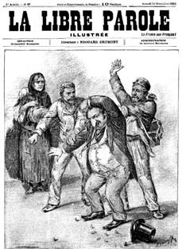
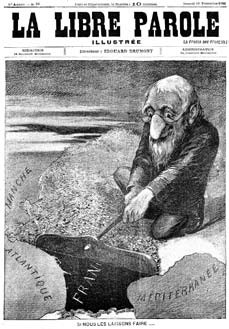
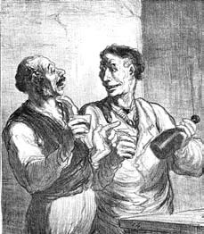
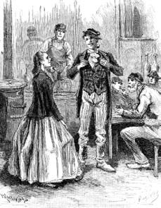
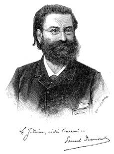
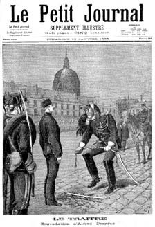

15 ve 16 Nisan güncelerinden
Bu noktada, sadece Dalla Piccola güncesinin sayfaları handiyse öfkeyle Simonini'ninkilerle kesişmekle kalmıyor, ara sıra karşıt bakış açılarıyla da olsa aynı olaydan söz etmelerine karşın, Simonini'nin kaleme aldığı sayfalar, sanki o yılları yaşarken temas kurmuş olduğu kişileri, ortamları, olayları hatırlarken zorlandığı için daha bir sarsıcı görünüyor. Simonini'nin oluşturduğu zaman dilimi (sonradan gerçekleştiği kesin olan olayları sık sık önce olmuş gibi yansıtsa da) Taxil'in '96 ya da '97 tarihindeki ihtida iddiasından ötesine ait. Neredeyse stenografik gibi duran bir yazıyla ve aklına geleni unutmaktan korkarcasına hızla çırpıştırılmış notlarında gündeme gelen sohbetler, düşünceler, dramatik olaylar on iki yıllık bir zaman sürecine yayılıyor.
Anlatıcı, günceyi tutan kişinin bile kafasını karıştıran bu çift yazarlı vis narrandi'den yoksun olduğundan, olayları –büyük olasılıkla hepsi aynı dönemde gerçekleşmiş olsa da– birbiri ardına ya da birbirinden ayrı olarak yaşanmışçasına farklı bölümlere ayırarak aktarmayı deneyecektir; örneğin Simonini, Raçkovski ile yaptığı bir söyleşiden ayrılır ve aynı öğleden sonra Gaviali ile buluşacaktır. Ama öyle midir acaba?
Adam ailesi salonu
Simonini, Taxil'i ihtida yoluna ittikten sonra (Dalla Piccola'nın onu sonra neden elinden aldığı bilinmiyor) –mason olmasa bile– Cumhuriyetçi ortamlara girip çıkmasını, oralarda pek çok masonla tanışabileceğini söylediğini hatırlıyor. Beaune Sokağı'ndaki kitapçıda kurduğu iyi ilişkiler ve özellikle de Toussenel'in yardımıyla, Juliette Lamessine'nin, yani Crédit Foncier'nin kurucusu ve ömür boyu senatör, Cumhuriyetçilerin sol kanadından milletvekilinin eşinin, yeni soyadıyla Madame Adam'ın salonuna kabul edilmişti. Önce Boulevard Poissonnière'de bulunan, sonra Malesherbes Bulvarı'na taşınan bu ev zenginlik, yüksek siyaset ve kültür kokuyordu; ev sahibesi de yazar olarak belli bir şöhret kazanmıştı (üstelik Garibaldi'nin hayatı hakkında bir kitap yazmıştı) ve bu ortamda Gambetta, Thiers veya Clemenceau gibi devlet adamları, Prudhomme, Flaubert, Maupassant, Turgenyev gibi yazarlar ile karşılaşmak mümkündü. Simonini ölümünden bir süre önce, artık kendi kendisinin anıtına dönüşmüşken, yaş, unvan ve beyne kan akımı nedeniyle yaşadığı sersemlik yüzünden adeta taşlaşmışken bu salonda Victor Hugo ile bile tanışmıştı.
Simonini, bu tür ortamlara devam etmeye alışkın değildi. Magny'deki Doktor Froïde'a (güncesinin 25 Mart tarihli sayfasında söz ediyordu ondan) o günlerde rastladı ve o doktor Charcot'ya yemeğe gidebilmek için bir frak ve siyah kravat alması gerektiğini anlattığında gülümsedi. Şimdi Simonini de bir frak ve kravat satın almak zorunda kalmıştı, üstelik bu yetmemiş, Paris'in en iyi (ve en orta yollu) peruka üreticisinden son moda ve güzel bir sakal da edinmişti. Bununla birlikte, gençliğinde aldığı eğitim ona belli bir kültür edindirmiş olsa, Paris yıllarında da okumaktan geri kalmamış olsa da çevresindeki à la page konuşmacıların göz kamaştırıcı, içerikli hatta derin sözleri ortasında kendini oldukça tedirgin hissediyordu. Bu nedenle çoğunlukla sessizliğini koruyor, her şeyi dikkatle dinliyor, arada sırada Sicilya seferi sırasında yaşadığı savaş anılarına değiniyordu; Fransa'da Garibaldi'den söz etmek her zaman ilgi uyandırıyordu.
Şaşırıp kalmıştı. Dönem gereği kaçınılmaz Cumhuriyetçi söyleşilerin yanı sıra kesinlikle devrimci muhabbetler de dinlemeye hazırlanmıştı ama Juliette Adam Çar yanlısı Ruslarla çevrili olmaya bayılıyordu; arkadaşı Toussenel gibi İngiliz düşmanıydı. Babası Alphonse nasıl içten bir demokrasi yanlısı olarak tanındıysa, Nouvelle Revue adlı dergisinde yer verdiği Léon Daudet ise gerici bir monarşi yanlısı olarak ün salmıştı – ama vurgulamakta yarar var, Madame Adam salonunun kapılarını ikisine de açıyordu.
Salondaki söyleşileri sık sık hararetlendiren Yahudi karşıtı tartışmaların nereden kaynaklandığı pek belli değildi. Toussenel'in temsil ettiği Yahudi kapitalizmine karşı sosyalist nefretten mi yoksa Rus okültist çevrelerine son derece bağlı, babasının orada diplomat olduğu dönemde inisiye edildiği Brezilya candomblé ayinlerini minnetle anan ve son günlerde Paris okültizminin müthiş kâhini Madame Blavatsky'nin (fısıltılara göre) mahremi Juliana Glinka'nın mistik antisemitizminden mi, bu bilinmiyor.
Juliette Adam'ın Yahudi dünyasına karşı duyduğu güvensizlik gizli saklı değildi ve Simonini'nin orada bulunduğu bir akşam, ortamda Rus yazar Dostoyevski'nin bazı yazıları yüksek sesle okunmuştu; belli ki Büyük Kahal yasası konusunda Simonini'nin de tanışmış olduğu Brafmann'a borçluydu.
"Dostoyevski bize der ki, defalarca topraklarını, siyasi bağımsızlıklarını, yasalarını ve hatta neredeyse inançlarını yitirdikleri ve her zaman birbirlerine eskisinden daha sıkı sıkı bağlanarak ayakta kalmayı başardıkları için böylesine hayata bağlı, böylesine olağanüstü güçlü ve canlı olan bu Yahudiler var olan devletlerin üzerinde olan bir devlet olmadan –status in statu– direnemezlerdi; onlar bu devletlerini en dehşetli zulüm dönemlerinde bile muhafaza ettiler ve bunu yamacında yaşadıkları halklardan kendilerini yalıtarak ve yabancılaştırarak ve de temel bir ilkeye dayanarak başardılar: 'Yeryüzünün dört bir yanına dağılmış bile olsan önemi yoktur, sana vaat edilmiş her şeyin gerçekleşeceğine imanın tam olsun, bu arada yaşa, küçümse, birlik ol, sömür ve bekle, bekle...' "
"Bu Dostoyevski büyük bir belagat ustasıdır, yorumunu yapıyordu Toussenel. Bakın, sözlerine Yahudiler için açıkça anlayış, yakınlık– ve sözümü mazur görün– saygı ifadeleriyle başlıyor: 'Yoksa ben de bir Yahudi düşmanı mıyım? Bu mutsuz ırkın bir düşmanı olması mümkün müdür? Tam tersine şurada söylüyor ve yazıyorum ki, insanlık ve adalet duygusunun gereği olan, insanlığın ve Hıristiyan yasasının buyurduğu her şey Yahudiler için yapılması gerekenlerdir...' Güzel bir girizgâh. Ama sonra bu mutsuz ırkın Hıristiyan dünyasını nasıl yok etmeye göz diktiğini anlatıyor. Müthiş bir hareket ama yeni değil: Marx'ın Komünist Manifesto'sunu okumamış olabilirsiniz. Manifesto, müthiş vurucu bir sahneyle başlar: 'Avrupa'da bir hayalet dolaşıyor.' Sonra hızlı bir şekilde Antik Roma'dan günümüze, sosyal mücadele tarihini bize sunar; bunu yaparken devrimci sınıf olarak burjuvaya ithaf edilen sayfalar gerçekten nefes kesicidir. Marx bütün gezegeni saran, engellenmesi olanaksız bu yeni gücü bize Tekvin'in başlangıcındaki Tanrı'nın yaratıcı nefesi olarak gösterir. Bu övgünün (yemin ederim gerçekten herkes bayılmıştı) sonunda sahneye burjuva başarısının canlandırdığı yeraltı güçleri çıkar: Kapitalizm iliklerinden kendi ölü gömücülerini, kendi emekçi sınıfını filizlendiriyor. Onlar da açık açık ilan ediyorlar: 'Biz şimdi sizi yok etmek ve bir zamanlar sizin olan her şeyi sahiplenmek istiyoruz.' Şahane. İşte Dostoyevski de Yahudilere böyle yapıyor; onların tarih boyunca hayatta kalmalarını sağlayan komployu aklıyor ve onları yok edilmesi gereken bir düşman olarak ihbar ediyor. Dostoyevski gerçek bir sosyalisttir."
"Sosyalist değil" diye araya giriyordu Juliana Glinka gülümseyerek. "O öngörü sahibi ve bu nedenle gerçeği söylüyor. Görüyorsunuz, en mantıklı olan karşı çıkışı, –yani yüzyıllardır devlet içinde devlet var olduysa da onu yaratan zulümlerdir ve bu ancak Yahudilerin yerli halklarla eşit haklara sahip olabilmesiyle giderilecek bir durumdur şeklindeki– itirazı nasıl tahmin ediyor. Yanlış! diye uyarıyor bizi Dostoyevski! Yahudiler öteki yurttaşlarla aynı haklara sahip olsalar bile günün birinde gelecek olan Mesih'in, kılıcıyla bütün halklara boyun eğdireceği şeklindeki o inatçı ve küstah düşüncelerini asla terk etmezler. Yahudiler bu nedenle tek bir işi, altın ve mücevher ticaretini yeğlerler: Böylece Mesih geldiğinde kendilerini, onları konuk etmiş olan toprağa bağlı hissetmeyecekler ve mal varlıklarını yanlarında rahatça götürebileceklerdir; Dostoyevski'nin şairane bir dille söylediği gibi: Şafağın ışıkları parlayacak ve seçilmiş halk çembalosunu ve davulunu ve gaydasını ve gümüşünü ve kutsal nesnelerini eski evine götürecek."
"Fransa onlara karşı son derece hoşgörülü davrandı" diye sonlandırıyordu konuyu Toussenel, "ve şimdi onlar borsanın, kredinin efendisi olmuş durumdalar. Bu nedenle sosyalizmin antisemitik olmaktan başka çaresi yoktur... Yahudilerin Manş ötesinden gelerek başarıya ulaşan kapitalizmin yeni prensleri ile aynı dönemde başarılı olmaları rastlantı değildir."

"...ve şimdi onlar borsanın, kredinin efendisi olmuş durumdalar. Bu nedenle sosyalizmin antisemitik olmaktan başka çaresi yoktur..."
"Olayları fazla basitleştiriyorsunuz Bay Toussenel" diyordu Glinka. "Rusya'da sizin övgüye değer bulduğunuz ve Marx'ın şu devrimci düşünceleriyle zehirlenmiş olanların büyük çoğunluğu Yahudi. Onlar dört bir yandalar."
Ve sonra sanki onlar ellerinde hançer sokağın köşesinde bekliyorlarmış gibi salonun penceresine dönüyordu. Çocukluk korkularından biri zihnini istila eden Simonini geceleri merdivenleri tırmanan Mordechai'ı düşünüyordu.
Ohrana için çalışmak
Simonini, Glinka'da olası müşterisini görmüştü. Onun yanına oturmaya –kendini zorlayarak da olsa– ona şöyle böyle kur yapmaya başlamıştı. Bizimki kadınların çekiciliği konusunda iyi bir yargıç sayılmazdı ama gene de onun sansar suratına, burun köküne yakın gözlerine bakarken, yirmi yıl önce tanıdığı gibi olmasa bile Juliette Adam'ın hâlâ ne kadar gösterişli ve çekici bir kadın olduğunu görebiliyordu.
Yine de Simonini, Glinka karşısında sınırı fazla aşmıyordu; onun hayallerini dinlerken, kadının Würzburg'da onu kim bilir hangi yol'a inisiye eden Himalaya gurusunu rüyette görüşüyle ilgilenirmiş gibi yapıyordu. Ezoterik eğilimlerine uyumlanabilecek Yahudi karşıtı malzemeyi sunabileceği bir özneydi besbelli. Üstelik Juliana Glinka'nın Rus gizli polisinde önemli bir figür olan General Orjeyevski'nin torunu olduğu ve onun sayesinde bir biçimde çarlık gizli servisi Ohrana'da çalıştığı ve bu kimlikle (çalışan mı, katkıda bulunan mı yoksa doğrudan rakip mi olduğu anlaşılamıyordu) bütün yurtdışı araştırmalarından sorumlu yeni görevli Pyotr Raçkovski'ye bağlı olduğu anlaşılıyordu. Solcu gazete Le Radical kuşkuculukta daha da ileri giderek Glinka'nın hayatını sistematik bir şekilde sürgündeki Rus teröristlerini ihbar ederek kazandığını iddia ediyordu; bu da onun sadece Adam ailesinin salonuna değil Simonini'nin bilemediği başka ortamlara da devam ettiği anlamına geliyordu.
Prag Mezarlığı sahnesini, Glinka'nın zevklerine göre yeniden düzenlemek, ekonomik projelerle ilgili gevezelikleri azaltmak, haham söylevlerinin Mesihçi hatlarını vurgulamak gerekecekti.
Gougeneot ve dönemin başka yazarlarının metinlerini biraz eşeleyen Simonini, hahamlara Tanrı'nın İsrail Kralı seçtiği ve Yahudi olmayanların bütün adaletsizliğini silip süpürecek hükümdarın dönüşü konusunda hayaller kurdurmuştu. Ve bu satırların arasında, mezarlık öyküsüne en az iki sayfalık bir Mesih kurgusu eklemişti: "İsrail'in Muzaffer Kralı'nın krallığı, Şeytan'ın bütün kudreti ve dehşetiyle, bozulmuş dünyamıza yaklaşıyor: Siyon kanından doğmuş Kral, Deccal, evrensel iktidarın tahtına yaklaşıyor." Ama Çarlık ortamında her türlü Cumhuriyetçi düşüncenin korku salacağını dikkate alarak, halkoyuna dayanan ve çoğunluğa kulak veren tek bir Cumhuriyetçi sistemin, Yahudilerin amaçlarına yarayacak yasaları yürürlüğe koyabileceğini ekledi. Sadece Yahudi olmayan o aptallar, diyordu hahamlar mezarlıkta, cumhuriyet yönetimi altında, mutlak yönetimde olmayan bir özgürlüğe sahip olabileceklerini zannederler; oysa tam tersine otokraside yönetenler bilgeler iken, liberal rejimde yönetime gelen avam sınıftır ve bunlar da Yahudi ajanlarca kolayca kışkırtılabilirler. Cumhuriyetin bir dünya Kralı ile birlikte yaşayabilmesi kaygı verici görünmüyordu: III. Napolyon olayı cumhuriyetlerin imparatorlarıyla gelişebileceklerinin göz önündeki kanıtıydı.
Ama dedesinin öykülerini anımsayan Simonini, hahamların söylevlerini, dünyadaki okült hükümetin nasıl işlemiş olduğunu ve nasıl işlemesi gerektiğini, uzun bir derlemeyle zenginleştirmeye karar vermişti. Glinka'nın bu konuların Dostoyevski'nin ele aldığı konularla aynı olduğunu fark etmemiş olması ilginçti – ya da farkına varmıştı ve tam da bu nedenle kadim bir metin Dostoyevski'yi onaylayarak onun da ne kadar özgün olduğunu ortaya koyduğu için etekleri zil çalıyordu.
Sözün özü, Prag Mezarlığı'nda, Yahudi kabalistlerin Kudüs'e dünyanın merkezi olma onurunu yeniden vermek için yola düşen Haçlılara esin kaynağı olduğu belirtiliyordu ve bunda (Simonini burada çok zengin bir repertuardan yararlanmayı biliyordu) elbette Tapınak Şövalyeleri'nin de yardımı vardı. Arapların Haçlıları denize dökmüş olmaları pek yazık olmuştu, Tapınak Şövalyeleri de o malum ve bedbaht sona uğramışlardı; böyle olmasaydı plan birkaç yüzyıl önce başarıya ulaşabilecekti.
Prag hahamları bu bakış açısıyla, hümanizmanın, Fransız Devrimi'nin, Amerikan Bağımsızlık Savaşı'nın hükümdarlara saygıyı ve Hıristiyanlık ilkelerini çökertmeyi nasıl başardığını, dünyanın Yahudilerce fethine zemin hazırladığını hatırlatıyorlardı. Tabii ki bu planı gerçekleştirmek için Yahudiler saygın bir cephe kurmak zorunda kalmışlardı ve bu da Farmasonluktu.
Simonini, ne Glinka'nın ne de onun Rus işverenlerinin tanıdığı yaşlı Barruel'in sözlerini beceriyle evirip çevirmişti; nitekim Glinka'nın raporunu yolladığı General Orjeyevski bundan iki metin çıkartmayı uygun bulmuştu: Daha kısa olan ilki aşağı yukarı özgün Prag Mezarlığı sahnesiydi ve (halkın bunu unutmuş ya da hiç öğrenmemiş olduğunu varsayarak) aslen Goedsche'nin kitabından alınmış olan hahamın söylevlerinden birinin on yıl kadar önce Petersburg'da dolaşmış olduğunu ve sonraki yıllarda Theodor Fritsch'in yayımladığı Antisemiten-Katechismus kitabında yer aldığını unutarak oranın birkaç dergisinde yayımlanmasını sağlamıştı. İkinci metin ise Tajna Evrejstva (Yahudilerin Sırları) adıyla bir risale şeklinde yayımlanmıştı; önsöz yazma onurunu bahşeden Orjeyevski nihayet gün ışığına çıkmış olan bu metnin her ikisi de (o günlerde Rusya'nın en korkunç suçlaması) nihilizmin ulağı olan masonluk ile Yahudilik arasındaki ilişkiyi kanıtladığını bildiriyordu.
Orjeyevski'den Simonini'ye uygun bir ödeme gelmişti; Glinka da –korkulan ve korkunç– anı geciktirmeyerek harika başarısı karşılığında ödül olarak bedenini sunma noktasına gelmişti ama Simonini titreyen elleriyle, bâkir ve sık solumalarıyla, bütün Stendhal okurlarının onlarca yıldır konuştukları Octave de Malivert ile aynı dertten mustarip olduğunu belli etti.
O günden sonra Glinka ve Simonini birbirleriyle ilgilenmez olmuşlardı. Ama günün birinde, Simonini basit bir déjeuner à la fourchette (ızgara pirzola ve böbrek) için Café de la Paix'ye girdiğinde ona rastlamıştı; Glinka'nın yanında iriyarı ve oldukça avam görünüşlü, orta halli bir adam vardı ve hararetli bir tartışmaya dalmışlardı. Selamlamak için yanlarına geldiğinde Glinka onu kendisini pek ilgiyle süzen Bay Raçkovski ile tanıştırmak zorunda kalmıştı.
Simonini o anda bu ilginin nedenini anlayamamıştı ama çok sonra bir gün dükkânının kapısı çaldığında ve Raçkovski'nin bizzat karşısında belirmesiyle durumu çözmüştü. Geniş bir gülümseme ve kendinden son derece emin bir tavırla dükkânı geçen Raçkovski, üst kata çıkan merdiveni fark ederek, çalışma odasına girmiş ve yazı masasının önündeki sandalyeye oturmuştu.
"Rica ederim" demişti, "işten söz edelim."
Ruslar gibi sarışın olmasına karşın artık otuzlu yaşlarını geçmiş bir erkek olarak saçlarına ak düşmüş olan Raçkosvki'nin etli ve gösterişli dudakları, çıkık burnu, Slav şeytanı gibi kaşları, yırtıcı bir içtenlik sergileyen gülümsemesi ve sokulgan bir hali vardı. Simonini onun bir aslandan çok leopara benzediğini düşünüyordu – ve gece vakti Osman Bey tarafından Sen Nehri kıyısına mı yoksa Raçkovski tarafından Grenelle Sokağı'nda bulunan Rus Elçiliği'ndeki odasına çağrılmanın mı daha az kaygı verici olabileceğini. Kararını Osman Bey'den yana kullanmıştı.
"Evet Yüzbaşı Simonini" diye başlamıştı söze Raçkovski, "siz Batılıların yanlış bir deyişle Ohrana şeklinde ifade ettiğiniz ama Rus göçmenlerin küçümseyerek Ohranka dedikleri şeyin ne olduğunu bilmiyor olabilirsiniz."
"Bu adın fısıldandığını işittim."
"Fısıldanacak bir şey yok; her şey gün ışığındaki gibi açık ve seçik. Ohrannye otdelenija Kamu Güvenliğinin ve Düzeninin Korunması Departmanı anlamına gelir ve İçişleri Bakanlığı'mıza bağlıdır. Çar II. Aleksandr'a yapılan suikasttan sonra çar ailesini korumak amacıyla kurulmuştur. Ama yavaş yavaş nihilist terörizm tehditleriyle de ilgilenmek zorunda kalmış ve bu nedenle yurtdışında, göçmen ve sürgünlerin bulunduğu ülkelerde de gözetim amaçlı şubeler açmıştır. İşte benim ülkemin yararına olarak burada bulunma nedenim budur. Her şey açık ve seçiktir. Saklananlar teröristlerdir. Anladınız mı?"
"Anladım. Peki ya ben?"
"Sırasıyla gidelim. Rastlantıyla terörist gruplar hakkında haberler duyarsanız, benimle paylaşmaktan çekinmeyin. Öğrendiğime göre, zamanında tehlikeli Bonapart karşıtlarını Fransız gizli servislerine ihbar etmişsiniz; insan zaten ancak arkadaşlarını, en azından tanıdıklarını ihbar edebilir. Ben de süt kuzusu sayılmam. Zamanında Rus teröristlerle ilişkim oldu; artık o sular duruldu ama işte bu nedenle de yıkıcı gruplar arasına karışmış kişilerin işe yarayacaklarını düşünen anti terörist serviste görevlendirildim. Yasaya layıkıyla hizmet edebilmek için önce onu delmiş olman gerekiyor. Fransa'da Vidocq örneğinde olduğu gibi; o da cezaevinde yattıktan sonra polis şefi olmuştu. Temiz denebilecek polise fazla güvenmemek gerekir. Onlar züppenin tekidirler. Ama biz kendi işimize bakalım. Son olarak fark ettik ki, militan teröristler arasında Yahudi entelektüeller var. Rus Çarı'nın sarayındaki bazı kişilerden aldığım emirle, Rus halkının güçlü moralini çökerten ve ayakta kalmasını tehdit edenlerin Yahudiler olduğunu kanıtlamaya çalışıyordum. Liberal olarak tanınan ve bu konularda bana asla kulak asmayan Bakan Witte tarafından korunduğumu duyabilirsiniz. Ama şunu iyi bilin ki, insan o andaki patronuna değil, bir sonrakine hizmet etmek için hazırlanmalıdır. Anlayacağınız, zaman yitirmek istemiyorum. Bayan Glinka'ya verdiğiniz metni gördüm ve büyük bir bölümünün süprüntü olduğunu düşünüyorum. Siz eski eşyaları yenisinden daha pahalıya sattığınızdan, eskiciliği bir kılıf olarak yaptığınız belli. Ama yıllar önce Contemporain dergisinde dedenizden kalan belgeleri yayımlayarak müthiş bir iş yaptınız ve başka türlüsünü yapsanız zaten şaşırırdım. Ortalıkta dolaşan söylentilere göre pek çok konuda pek çok şey biliyorsunuz. (Simonini bu sırada bu projeyi, bir casustan fazlası gibi görünmenin avantajlarını zihninde tartıyordu.) Bu nedenle sizden güvenilir belge istiyorum. İyiyi kötüden ayırmayı bilirim. Karşılığını öderim. Ama malzeme iyi çıkmazsa tepem atar. Anlaşıldı mı?"
"İyi de tam olarak istediğiniz nedir?"
"Bunu bilsem zaten size para ödemezdim. Emrimde iyi belgeler oluşturan insanlar var ama onlara içeriği ben sağlıyorum. Ve masum Rus tebaasına Yahudilerin Mesih'i beklediğini anlatamam; bu zaten ne mujikleri ne toprak sahiplerini ilgilendirir. Onlar ancak ceplerine girecek para söz konusu ise Mesih beklentisiyle ilgilenirler."
"Peki ama neden özellikle Yahudileri hedef alıyorsunuz?"
"Çünkü Rusya Yahudi dolu. Türkiye'de olsaydım, Ermenileri hedef alırdım."
"Yani siz Yahudilerin yok edilmelerini istiyorsunuz aynen –belki tanırsınız– Osman Bey gibi."
"Osman Bey fanatiktir, üstelik kendi de Yahudi'dir. Ondan uzak durmak iyi olur. Ben Yahudileri yok etmek istemiyorum, cüretimi mazur görün ama Yahudilerin en iyi müttefiklerim olduğunu söyleyebilirim. Ben Rus halkının moralinin güçlü olmasını arzu ediyorum ve halkın mutsuzluğunu Çar'a yöneltmesini istemiyorum – ya da yaranmaya çalıştığım kişiler istemiyorlar. Bu nedenle bir düşman gerekiyor. Bir zamanların hükümdarlarının yaptığı gibi gidip düşmanı Moğollar ya da Tatarlar arasında aramanın gereği yok. Düşmanın tanınır ve korkulur olması için onun evde ya da evin eşiğinde olması gerekir. İşte Yahudi dememin nedeni budur. Kader onları karşımıza çıkardığına göre kullanmalıyız; her zaman korkacak ve nefret edecek birkaç Yahudi'nin olması için dua etmeliyiz. Halka umut vermek için bir düşman gereklidir. Birileri yurtseverliğin, ayaktakımının son sığınağı olduğunu söyledi: Ahlaksal ilkeleri olmayanlar genellikle bir bayrağa sarınırlar, soysuzlar da daima ırklarının saflığıyla övünürler. Ulusal kimlik, mirastan yoksun kalanların son pınarıdır. Şimdi kimliğin anlamı, nefret üzerinde temelleniyor, aynı olmayana duyulan nefret üzerine. Nefreti uygar bir tutku olarak beslemek gerekir. Düşmanı, halkların dostudur. İnsanın kendi sefilliğine mazeret bulabilmesi için nefret edecek birine gereksinmesi vardır. Nefret insanın en kadim tutkusudur. Anormal olan durum sevgidir. İsa bu nedenle öldürüldü: Doğaya karşı olan bir şeyden söz ediyordu. İnsan birini, bütün bir ömrü boyunca sevemez, bu olanaksız umuttan zina, ana katli, dosta ihanet doğar... Oysa insan ömür boyu birinden nefret edebilir. Yeter ki nefretimizi körüklesin. Nefret yüreği ısıtır."
Drumont
Bu sözler Simonini'yi tedirgin etmişti. Raçkovski sözlerinde ciddi görünüyordu, eğer ona yayımlanmamış malzeme vermezse "huzursuz olacak" gibiydi. Kaynakları kurumuş değildi, hatta farklı tutanaklar için pek çok evrak biriktirmişti ama sanki karşısındaki daha fazlasını talep edeceğe benziyordu; Glinka gibi tiplere yeten Deccal işleri, ona yetmeyecekti; günceli daha yakından izleyen malzeme bulmalıydı. Sözün özü, şimdi aklında olan, güncelleştirilmiş Prag Mezarlığı'nı zararına satmak değil, tam tersine ederini yükseltmekti. Bu nedenle de bekliyordu.
Mason karşıtı malzeme edinmek için peşini bırakmayan Peder Bergamaschi'ye dökmüştü içini.
"Şu kitaba bir bak" demişti Cizvit rahip. "Édouard Drumont'un yazdığı La France juive. Yüzlerce sayfa. İşte kesinlikle senden daha fazlasını bilen biri bu."
Simonini kitabı şöyle bir karıştırmıştı: "İyi ama bunlar bizim ihtiyar Gougenot'nun on beş yıl önce yazdığı şeyler!"
"Ne olmuş yani? Bu kitap kapış kapış satılıyor; belli ki onun okurları Gougenot'yu hiç duymamışlar. Senin Rus müşteri okumuş mudur Drumont'u? Sen bir dönüştürme ustası değil misin? Git ve o ortamlarda söylenenleri, yapılanları kokla biraz."
Drumont ile temas kurmak kolay olmuştu. Simonini, Adam ailesinin salonuna Alphonse Daudet sayesinde girebilmişti; Adam salonunda davet olmadığında, yazar onu Champrosay'daki evine davet ediyordu; Julia Daudet'nin zarif evsahibeliğinde Goncourt, Pierre Loti, Émile Zola, Frédéric Mistral ve La France juive kitabını yazdıktan sonra ün kazanan Drumont gibi adlar ağırlanıyorlardı. Sonraki yıllarda Simonini yazarı önce kurmuş olduğu La Ligue Antisémitique'te, sonra da gazetesi La Libre Parole'ün yazı işlerinde ziyaret etmeyi sürdürdü.

...Simonini yazarı önce kurmuş olduğu La Ligue Antisémitique'te, sonra da gazetesi La Libre Parole'ün yazı işlerinde ziyaret etmeyi sürdürdü.
Drumont'un aslan yelesini andıran saçı, kara bir sakalı vardı; kemerli burnu, ateşli bakışları dikkat çekiciydi; bu görünümüyle –dönemin ikonografisine dayanarak– onda bir Yahudi peygamberi havası vardı; gerçekten de o Yahudi karşıtlığında Mesihçe bir tavır vardı; sanki Kadiri Mutlak ona seçilmiş halkı yok etme görevini vermiş gibiydi. Simonini, Drumont'un Yahudi karşıtlığı konusundaki kin duygusuna hayrandı. Kendisi Yahudilerden aşkla, seçilmişlikle, bağlılıkla nefret ediyordu – adeta cinselliğin yerini tutan bir dürtüydü bu. Drumont, Toussenel gibi felsefi ve siyasi, Gougenot gibi teolojik anlamda antisemitist değildi; o erotik bir antisemitistti.
Bunu anlamak için, gazetenin uzun ve tembel toplantılarında yaptığı konuşmaları dinlemek yeterliydi.
"Rahip Desportes'un Yahudilerin kan konusundaki sırlarını anlatan kitabına önsöz yazmayı gönüllü olarak üstlendim. Bu Ortaçağ'da kalmış bir uygulama değil. Bugün hâlâ kutsal Yahudi baronesler verdikleri davetlerde konuklarına sundukları tatlılara Hıristiyan çocukların kanından katıyorlar."
Ayrıca: "Samiler tüccardır, açgözlüdür, dalaverecidir, kurnazdır, hilecidir; oysa biz Ariler heyecanlıyız, kahramanız, şövalyeyiz, çıkar gütmeyiz, dürüstüz, saflık derecesinde içteniz. Sami dünyevidir, yaşanan hayatın ötesinde bir şey görmez; Tevrat'ta öteki dünyaya ilişkin hiçbir bilgi yoktur. Ari, daima aşkın olanın peşindedir, ülkünün oğludur. Hıristiyan Tanrısı arşı âlâdadır, Yahudi tanrısı ya dağın tepesinde, ya çalıların arkasındadır, daha yükseklerde değil. Sami ticaret adamıdır; Ari tarımcı, şair, rahip ve özellikle de askerdir, çünkü ölüme meydan okur. Sami'nin yaratıcı gücü yoktur; siz hiç Yahudi müzisyen, ressam, şair ya da bilimsel buluşlar yapmış bir Yahudi gördünüz mü? Ari mucittir, Sami icatlardan yararlanır."
Wagner'in yazdıklarını aktarıyordu: "Kadim zamanların ya da modern çağların yiğit ya da sevdalı bir kahramanını sahnede bir Yahudi canlandırdığında, seyirci gösterinin ne kadar gülünç olduğunu hissetmeden seyredemez. Bizi en çok tiksindiren Yahudilerin konuşmasını karakterize eden özel aksandır. Kulaklarımız bu şivenin tiz, keskin, ıslıksı seslerinden rahatsız olur. Yahudilerin doğalarında bulunan ve bize en sevimsiz gelen yoksunluk, azami ifadesini bireysel duyguların en özgün ve neşeli sergileme tarzı olan şarkıda bulur. Yahudilerin belki başka sanatlara yetenekleri olduğu kabul edilse bile şarkının doğanın onlardan kesinlikle esirgediği bir beceri olduğu kabul edilmelidir."
"Peki o halde" diye sormuştu birisi, "müzik sahnelerini istila etmeleri nasıl açıklanır? Rossini, Meyerbeer, Mendelssohn ya da Giuditta Pasta, hepsi Yahudi..."
"Belki de müziğin üstün bir sanat dalı olduğu doğru değildir" diyordu bir başkası. "O Alman filozof, müziğin dinlemek istemeyeni de rahatsız ettiği için resim ve edebiyattan daha değersiz olduğunu söylemiyor muydu? Yanında birisi hoşlanmadığın bir melodi çalsa onu dinlemek zorundasındır; cebinden kokulu mendil çıkarsa ve o kokuyla seni rahatsız etse de aynı şeydir. Ari ırkının övüncü şu dönemde krizde olan edebiyattır. Oysa düşkünler ve hastalar için duygulu bir sanat olan müzik baş tacı durumunda. Timsahtan sonra hayvanların en müzik düşkünü olan Yahudi'dir, bütün Yahudiler müzisyendir. Piyanistlerin, kemancıların, viyolonselcilerin hepsi Yahudi'dir."
"Evet ama yalnızca yorumcudurlar; büyük bestecilerin asalakları gibidirler" diye yanıtlıyordu Drumont. "Meyerbeer ve Mendelssohn gibi ikinci sınıf müzisyenlerin adını andınız ama Delibes ve Offenbach Yahudi değildirler."
Yahudiler müziğe yabancı mıdır, yoksa müzik Yahudilere özgü bir sanat dalı mıdır tartışması çıkmıştı ve görüşler kesinlikle birbirini tutmuyordu.
Eiffel Kulesi tasarlandığında ve özellikle de yapımı sona erdiğinde antisemitist cemiyette öfke doruğa çıkmıştı: Kule bir Alman Yahudisi tarafından yapılmıştı ve de Sacré-Coeur Kilisesi'ne Yahudi yanıtı manasını taşıyordu. Grubun en ateşli Yahudi düşmanı olan Biez, İbranilerin yazılarını bile normal insanların ters yönünde yazmalarından hareketle onların aşağı sınıfa ait olduklarını ileri sürüyor ve şöyle diyordu: "Bu Babil işi tasarımın formu bile beyinlerinin bizimki gibi işlemediğinin kanıtıdır..."
Bunun üzerine söz Fransa'da dönemin derdi halini alan alkolizme geldi. Paris'te alkol tüketiminin yılda 141.000 hektolitre olduğu söyleniyordu.
"Alkol" diyordu birileri, "geleneksel zehirleri olan Tofana Suyu'nu mükemmelleştiren Yahudiler ve masonlar tarafından yayılıyor. Suya benzeyen ama içinde afyon ve kuduzböceği bulunan bir zehir üretiyorlar. Önce bitkinlik ve budalalık yaratıyor, sonra da ölüme sürüklüyor. Alkollü içkilere katılıyor ve intihara yol açıyor."

"Alkol" diyordu birileri, "geleneksel zehirleri olan Tofana Suyu'nu mükemmelleştiren Yahudiler ve masonlar tarafından yayılıyor."IR 3
"Ya pornografiye ne demeli? Toussenel (bazen sosyalistler de doğru söyleyebilirler) domuzun adilik ve onursuzluk içinde yuvarlanmaktan utanmayan Yahudi'nin simgesi olduğunu yazmıştı. Öte yandan Talmud rüyada dışkı görmenin hayra alamet olduğunu söyler. Bütün açık saçık kitaplar Yahudiler tarafından yayımlanır. Croissant Sokağı'na gidin, şu pornografik dergiler pazarına bir göz atın. Yan yana dizilen Yahudi tezgâhlarında uçarı yaşama, kızlarla çiftleşen keşişlere, sadece saçlarıyla örtülü çıplak kadınları kırbaçlayan rahiplere, aleti dikilmiş adamlara, sarhoş ve obur papazlara ilişkin sahnelerle dolu dergiler göreceksiniz. Oradan insanlar hatta çocuklu aileler geçer ve gülüşürler. İfademi mazur görün ama zafer götündür. Oğlancı din adamları, utanmaz din adamlarına çıplak popolarını kırbaçlatan rahibeler..."
Olağan konulardan bir başkası da Yahudi göçmenliğiydi.
"Yahudi göçmendir ama bunu yeni topraklar keşfetmek değil, kaçmak için yapar" diye vurguluyordu Drumont. "Ari seyahat eder, Amerika'yı, bilinmeyen toprakları keşfeder; Sami, Ari'nin yeni topraklar keşfetmesini bekler ve bulununca da sömürmek için oraya göçer. Masallara da dikkat edin. Yahudilerin güzel bir masal yazmak için yeterli hayal güçleri yoktur ve onların Sami kardeşleri olan Arapların yazdığı Binbir Gece Masalları'nda birileri altın dolu bir tulum, Haramilerin mücevher dolu mağarasını, içinde iyi yürekli bir cin olan lamba bulur ve bütün bunlar ona Yaradan tarafından armağan edilmiştir. Oysa Arilerin yazdığı masallarda –Kutsal Kâse Graal'ın ele geçirilişini düşünün– her şey mücadele ve fedakârlıkla kazanılmak zorundadır."
"Bütün bunlar sayesinde" diyordu Drumont'un arkadaşlarından biri, "Yahudiler her türlü olumsuzluğa karşın ayakta kalmayı başardılar."
"Elbette" diyordu bu duruma pek içerlediği belli olan Drumont, "onları yok etmek olanaksızdır. Bütün öteki halklar, bir başka ortama göç ettiğinde iklim değişikliğine, yeni besinlere uyum sağlayamaz ve zayıflar. Oysa onlar böcekler gibi yer değiştirdikçe güçleniyorlar."
"Çingeneler gibi, asla hastalanmazlar. Leşle beslenseler bile böyledir. Belki yamyamlık yardım ediyordur onlara, bu nedenle çocuk kaçırıyorlardır..."
"Ama yamyamlık hayatı uzatır diye bir şey yoktur; Afrika'nın zencilerine bakın: Onlar da yamyamdır ama köylerinde sinekler gibi can verirler."
"Peki o halde Yahudilerin bağışıklık gücü nasıl açıklanır? Hıristiyanlarda yaş ortalaması otuz yediyken, onlarınki elli üç! Ortaçağdan beri gözlemlenen bir olguya göre salgın hastalıklar konusunda Hıristiyanlardan daha dayanıklıdırlar. Sanki içlerinde daimi bulunan veba sayesinde sıradan vebadan korunurlar."
Simonini bu konuların zaten Gougenot tarafından ele alındığını biliyordu ama Drumont'un sofrasında düşüncelerin ne özgünlüğü ne de gerçekliği önemseniyordu.
"Tamam" diyordu Drumont, "fiziksel hastalıklar konusunda bizden daha dayanıklılar ama zihinsel hastalıklara daha çok maruz kalıyorlar. Uzlaşmalar, vurgunlar, komplolar içinde yaşamak sinir sistemlerini bozuyor. İtalya'da üç yüz kırk sekiz Yahudi'den biri deliyken, Katoliklerde bu oran yedi yüz yetmiş sekizde bir şeklindedir. Charcot, Rus Yahudileri konusunda ilginç bir araştırma yaptı ve bunu yapabilmesinin nedeni onların son derece yoksul olmasıydı; Fransa'da ise Yahudiler zengin olduklarından akıl hastalarını yüksek ücretler karşılığında Doktor Blanche'ın kliniğine saklıyorlar. Sarah Bernhardt'ın odasında beyaz bir tabut bulundurduğunu biliyor muydunuz?"
"Üstelik bizim iki katımız hızla ürüyorlar. Yeryüzünde sayıları dört milyonu geçmiş durumda."
"Çıkış da böyle söylüyordu zaten; İsrailoğulları ekin gibi çoğaldılar, bereketle geliştiler ve büyük kudret kazanarak yeryüzünü doldurdular."
"İşte şimdi de buradalar. Kim olduklarından kuşkulanmadığımız zamanlarda bile buradaydılar. Marat kimdi? Gerçek adı Mara idi. İspanya'dan kovulmuş Sefarad bir ailedendi, İbrani soyunu gizlemek için Protestanlığı seçti. Marat: Cüzamın kemirdiği, pislik içinde ölen bu akıl hastası sürekli izlendiği ve öldürüleceği vehmi ile yaşayan tipik bir Yahudi idi ve pek çok Hıristiyan'ı giyotine yollayarak onlardan intikam almaya çalıştı. Carnavalet müzesindeki portresine bakarsanız, sapık, sinir hastası birini görürsünüz; Robespierre ve öteki Jakobenler gibi yüzünün iki tarafı asimetriktir ve bu da onun dengesizliğini açıklar."
"Devrimin olağanüstü biçimde Yahudiler tarafından yapıldığını biliyoruz. Peki, Papa düşmanlığı yüklü nefreti ve mason müttefikleriyle, Napolyon bir Sami miydi?"
"Olabilir, bunu Disraeli de söylemişti. İspanya'dan kovulan Yahudiler, Balear ve Korsika adalarına sığınmışlardı: Sonra ihtida ederek, Orsini ve Bonapart gibi hizmet ettikleri efendilerinin adlarını aldılar."
Her toplulukta yanlış zamanda yanlış soru soran bir gaffeur vardır. O tuzak soru gelmekte gecikmedi: "Peki ya İsa? Yahudi idi ama gencecik yaşında öldü, parayla hiç ilgisi olmadı, sadece göklerdeki krallığı düşündü..."
Yanıt Jacques de Biez'den geldi: "Beyler, İsa'nın ve Aziz Pavlus ile dört İncil yazarının Yahudi olduğu söylentisi bizzat Yahudiler tarafından yayılmıştır. İsa aslında biz Fransızlar gibi Kelt ırkındandı; bizler çok sonra Latinler tarafından fethedildik. Ve Latinler tarafından hadım edilmeden önce, Keltler fatih bir milletti; Yunanistan'a kadar inmiş olan Galatları duydunuz mu? Celile'nin adı da orayı sömürgeleştiren Gallilerden gelir. Kaldı ki oğlan doğuran bakire bir Kelt ve Druid efsanesidir. Elimizdeki resimlerine bakmak yeterlidir: İsa hepsinde sarışın ve mavi gözlü resmedilmiştir. Yahudilerin törelerine, batıl inançlarına, noksanlıklarına karşı çıkıyordu; Yahudilerin Mesih'ten beklediklerinin tersine krallığının bu dünyada olmadığını söylüyordu. Yahudiler tek tanrılı iken, İsa Keltlerin çoktanrılılığından esinlenerek Üçleme düşüncesini ortaya attı. İşte bu nedenle öldürdüler onu. Onu mahkûm eden Kayafa, Yahudi idi, Ona ihanet eden Yahuda Yahudi idi, onu inkâr eden Petrus Yahudi idi..."
Drumont, La Libre Parole gazetesini kurduğu sene, şans ya da sezgi sonucu Panama skandalına el attı.
"Çok basit" diyordu Simonini'ye kampanyasına başlamadan önce. "Süveyş Kanalı'nı açan Ferdinand de Lesseps, Panama kıstağını açmakla görevlendirildi. Altı yüz milyon franklık bir bütçe vardı ve Lesseps bir anonim şirket kurdu. Çalışmalar 1881 yılında bin bir güçlükle başladı; Lesseps, daha fazla paraya gereksinmesi olduğundan imza toplamaya başladı. Ama toplanan paranın bir kısmını gazetecilere rüşvet vermek ve yavaş yavaş ortaya çıkan zorlukları gizlemek için kullandı; '87 yılında kıstağın henüz yarısı kazılmışken bin dört yüz milyon frank harcanmıştı bile. Lesseps o korkunç kuleyi yapmış olan Yahudi Eiffel'den yardım istedi; sonra fonları toplamaya ve parayı hem basına hem farklı milletvekillerine rüşvet olarak vermeye harcadı. Böylece dört yıl önce Kanal Şirketi battı ve katkıda bulunan seksen beş cesur Fransız bütün parasını yitirdi."
"Bu meşhur bir hikâyedir zaten."
"Evet ama artık, Lesseps'e destek olanlar arasında (Prusya sıfatı taşıyan) Baron Jacques de Reinach'ın da bulunduğu Yahudi finansörler olduğunu kanıtlayabilirim. Yarın çıkacak olan La Libre Parole olay yaratacak."
Evet, skandala, gazetecileri, hükümet görevlilerini, eski bakanları da katarak haberin gerçek bir gürültü koparmasını sağlamıştı; Reinach intihar etmiş, bazı önemli kişiler hapse girmiş, Lesseps zamanaşımı sayesinde, Eiffel de kıl payı kurtulmuştu. Drumont yolsuzluğu ortaya çıkaran kişi olarak zaferini kutluyor ama aslında Yahudi karşıtı kampanyasını somut olaylarla besliyordu.
Birkaç bomba
Görünen o ki, Simonini, Drumont'a yaklaşamadan Hébuterne tarafından bir kez daha Notre Dame Kilisesi'nin sahanlığına çağrılmıştı.
"Yüzbaşı Simonini" demişti Hébuterne, "yıllar önce sizden Taxil'i masonluk karşıtı bir kampanya başlatması için görevlendirmiştim ama adamın hokkabazlığı yüzünden oklar en sıradan mason karşıtlarına yöneldi. Sizin adınıza garanti vererek, bu işin Rahip Dalla Piccola'nın denetimi altında yürüyeceğini söylemişti ve ben de ona azımsanmayacak miktarda para vermiştim. Ama artık Taxil denen bu adamın abarttığını düşünüyorum. Rahibi bana siz gönderdiğinize göre ona ve Taxil'e baskı yapmanızı istiyorum."
Simonini bu noktada zihninde bir boşluk olduğunu kendi kendine itiraf ediyor: Rahip Dalla Piccola'nın Taxil ile ilgilenmesi gerektiğini bilir gibi, ama onu herhangi bir işle görevlendirdiğini hiç anımsamıyor. Bir tek Hébuterne'e durumla ilgileneceğini söylediği var aklında. Sonra ona o anda Yahudilerle ilgilendiğini ve Drumont'un çevresindekilerle bağlantı kurmak üzere olduğunu söylüyor. Hébuterne'in o grubu nasıl onayladığını fark edince şaşırıyor. Simonini, hükümetin Yahudi karşıtı kampanyalara karışmak istemediği söylenmemiş miydi ona diye düşünüyor.
"İşler değişiyor, yüzbaşı" demişti Hébuterne. "Bakın, kısa bir süre öncesine kadar, Yahudiler ya bugün Roma ve Rusya'da devam ettiği üzere bir gettoda yaşayan yoksul insanlardı ya da bizde olduğu üzere büyük bankerlerdi. Yoksul Yahudiler tefecilik yapıyor ya da tıpla uğraşıyorlardı ama zengin olanlar sarayın finansmanını üstleniyor, kralın borçlarıyla semiriyor, savaşları için krala kredi veriyordu. Bu anlamda hep iktidardan yana oluyor ve siyasete karışmıyorlardı. Ve finansla ilgilendikleri için sanayiyle ilgilenmiyorlardı. Sonra bizim de farkına geç vardığımız bir şeyler oldu. Devrim'den sonra devletler Yahudilerin sağlayabileceğinden çok daha büyük bir finansal açıkla yüz yüze geldiler ve Yahudi yavaş yavaş kredi konusunda tekel olma pozisyonunu yitirdi. Bu arada adım adım cisimlenen ve bizim şimdi şimdi anladığımız bir gerçeklik ortaya çıktı: Devrim en azından bizim buralarda, bütün yurttaşlara eşitlik getirdi. Her zaman olduğu üzere, gettolardaki garibanlar dışındaki Yahudiler burjuva oldular ve sadece kapitalistlerin yüksek burjuvasına değil, aynı zamanda meslek sahiplerinin, devlet düzenini sağlayanların ve ordunun burjuvasına da dahil oldular. Bugün orduda ne çok Yahudi subay olduğunu biliyor musunuz? Sizin tahmininizden çok daha fazla! Sadece ordu da değil: Yahudiler aşama aşama anarşik ve komünist yıkım dünyasına da sızdılar. Önceleri züppe devrimciler, antikapitalist oldukları kadar Yahudi karşıtı idiyseler ve Yahudiler daima hükümetin müttefiki olmayı başardıysalar da bugün moda muhalif Yahudi olmak. Zaten bizim devrimcilerin dillerinden düşürmedikleri o Marx kimdi ki? Aristokrat karısının sırtından geçinen beş parasız bir burjuva. Ayrıca unutmamamız gereken, Collège'den École des Hautes Études'e kadar bütün orta ve yüksek eğitimin onların elinde olduğudur; Paris'in bütün tiyatroları, bankanın resmi organı olan Journal des débats dahil basının büyük bölümü de onların elindedir."
Simonini, Yahudi burjuvazisinin böylesine yaygın ve saldırgan olması konusunda Hébuterne'in kendisinden ne istediğini hâlâ anlamış değildi. Bunu sorduğunda Hébuterne müphem bir el işareti yaparak yanıt vermişti.
"Bilmiyorum. Sadece dikkatli olmalıyız. Sorun bu yeni Yahudi sınıfına güvenip güvenmemek gerektiği. Dikkat edin, sözünü ettiğim Yahudilerin dünyayı ele geçirme komplosuyla ilgili söylentiler değil. Bu Yahudi burjuvalar artık asıl cemaatleriyle yüzleşmiyorlar, çoğunlukla kökenlerinden utanıyorlar ama bir yandan da güvenilmez yurttaşlar sınıfındalar, çünkü tam bir Fransız olmaları şunun şurasında çok yeni ve yarın Prusyalıların burjuva Yahudileriyle işbirliği yaparak ihanet etmeleri mümkündür. Prusya işgali döneminde casusların çoğu Alzaslı Yahudi idi."
Vedalaşacakları sırada Hébuterne eklemişti: "Tesadüf. Lagrange zamanında Gaviali diye biriyle ilgilenmiştiniz. Onu siz tutuklatmıştınız."
"Evet, Huchette Sokağı suikastını yapanların başıydı. Sanırım şimdi hepsi Cayenne'de ya da benzeri yerlerdedirler."
"Gaviali dışında hepsi; o kısa süre önce kaçtı ve Paris'te görüldü."
"Şeytan Adası'ndan kaçmak mümkün mü?"
"Cesaretiniz olduktan sonra her yerden kaçılır."
"Neden tutuklatmıyorsunuz peki?"
"Çünkü şu ara iyi bir bomba imalatçısı işimize yarayabilir. Kimliğini belirledik: Clignancourt'da eskicilik yapıyor. Neden gidip bulmuyorsunuz onu?"
Paris'te eskiciden bol bir şey yoktu. Kentin her tarafına dağılmış olsalar bile bir zamanlar krallıklarını Mouffetard ve Saint-Médard sokakları arasına kurmuşlardı. Şimdi en azından Hébuterne'in belirledikleri Clignancourt Kapısı'na yakın bir yerlerdeydiler ve çatısı çalı çırpıyla örtülü barakalarda yaşıyorlardı; kim bilir neden, sıcak mevsimlerde bu iğrenç ortamın çevresini toprakta boy veren ayçiçekleri süslüyordu.
Yakınlarda bir zamanlar Islak Ayaklıların Lokantası diye tanınan bir yer vardı; müşteriler sıralarının gelmesini sokakta beklerler, içeriye girince verdikleri tek kuruş karşılığında büyük bir çatalı koca kazana daldırmaya hak kazanırlardı; çatalın ucuna kimi zaman bir et parçası takılırdı, kimi zaman bir havuç! Kısmetini alan çekip gitmek zorundaydı.
Eskicilerin kendi hôtel garni'leri vardı. Fazla bir şeyleri yoktu: bir yatak, bir masa ve birbirine benzemeyen iki iskemle. Duvarlarda çöplükten bulunmuş dinsel resimler ya da eski romanlara ait gravürler asılı olurdu. Pazar günleri yapılan tuvalet bakımı için kırık bir ayna parçası da eksik olmazdı. Eskiciler burada oturur, buldukları şeyleri birbirinden ayırırlardı: kemikler, porselenler, camlar, eski kurdeleler, ipekli parçaları. Gün sabah altıda başlar, akşamın yedisinden sonra şehir çavuşları (ya da herkesçe bilinen adlarıyla flic'ler) hâlâ işbaşında olan birini bulursa ceza keserdi.
Simonini, Gaviali'yi nerede bulacağını biliyordu. Araştırmasının sonunda, yalnızca şarap değil zehirli diye bilinen (sanki normali yeterince zehirli değilmiş gibi) absent de satan bir bibine'e girdiğinde ona bir tipi gösterdiler. Simonini, Gaviali'yi tanıdığında sakalsız olduğunu hatırlayarak o gün takma sakalını takmamıştı. Aradan yirmi yıl geçmişti ama hâlâ tanınabileceğini umuyordu. Tanınmayacak halde olan biri varsa, o da Gaviali idi.
Derin çizgilerle belirlenmiş yüzü bembeyazdı ve uzun bir sakalı vardı. Yağlı yakasından daha çok ipi andıran sarımsı bir kravat sarkıyordu; yakanın üzerindeki boyun ipinceydi. Başına paçavra misali bir şapka kondurmuştu; buruşuk yeleği üzerine yeşilimsi redingot giymişti; ayakkabıları ve onlara uyum sağlayan bağcıkları yıllardan beri silinmemişçesine çamurluydu. Ama eskicilerin hiçbiri Gaviali'ye dikkat etmiyordu, çünkü hiçbirinin giyimi kuşamı ondan daha iyi değildi.
Simonini kendini tanıtmış ve nazik bir tanıma ifadesi beklemişti karşı taraftan. Oysa Gaviali ona sert bakışlarla yanıt vermişti.
"Karşıma çıkma cesaretini nereden buldunuz Yüzbaşı?" demişti. Simonini'nin şaşırması üzerine de eklemişti: "Beni aptal mı sanıyorsunuz? Jandarmaların geldiği ve üzerimize ateş açtıkları o gün, ajanınız olarak aramıza yolladığınız zavallıyı bizzat sizin kurşunladığınızı gözlerimle gördüm. Üstelik orada canını kurtaran herkes Cayenne Adası'na giden yelkenlide buluştu ama siz aramızda değildiniz. İkiyle ikiyi toplayıp dördü bulmak gayet kolay. İnsan Cayenne Adası'nda on beş yılı bomboş geçirince akıllanıyor: Sonradan ihbar etmek için oluşturdunuz bizim komplomuzu. Kârlı bir iş olsa gerek."
"Ne olmuş yani? İntikam almak mı istiyorsunuz? Şu anda bir insan kalıntısı halindesiniz; varsayımınız doğruysa polisin bana kulak vermesi gerekir ve sorumluluk sahibi biri olarak onları uyarırsam Cayenne'e yeniden dönersiniz."
"Tanrı aşkına Yüzbaşı. Cayenne'de geçirdiğim yıllar beni bilgeleştirdi. Komplo kurmaya soyunan kişi, bir mouchard ile yüz yüze geleceğini hesaba katmalıdır. Hırsız-polis oynamak gibidir. Hem bakın, birileri bütün devrimcilerin yıllar geçtikçe tahtın ve kilisenin savunucusu olduğunu söylemiş. Taht ve kilise benim umurumda değil ama büyük ülküler mevsiminin sona erdiğini düşünüyorum. Üçüncü Cumhuriyet denen bu dönemde kellesi alınacak tiranın kim olduğu bile belli değil. Hâlâ yapmayı bildiğim tek şey bomba. Beni bulmak için buralara gelmenizden belli; gene bomba yaptırmak istiyorsunuz. Parasını ödeyecekseniz, neden olmasın? Nerede oturduğumu görüyorsunuz. Evimi ve lokantamı değiştirebilmek yeter bana. Ölüme göndereceğim kimdir acaba? Bütün eski devrimciler gibi ben de satılmışın tekiyim. Sizin de iyi bildiğiniz bir meslektir bu."
"Sizden bomba alacağım Gaviali ama ne tip olacağını ve nerede kullanacağımı henüz bilmiyorum. Zamanı gelince konuşuruz. Size para ödemeyi, geçmişin üzerine sünger çekmeyi ve yeni belgeler vermeyi taahhüt ediyorum."
Gaviali kim para öderse ona hizmet etmeye hazır olduğunu bildirmiş, Simonini de ona en azından bir ayı çöp toplamadan geçirmesine yetecek kadar para ödemişti. Emredeni itaat eden haline getirecek en mükemmel çare, ufukta görünen cezaevidir.
Hébuterne, Gaviali'nin ne yapacağını ileriki günlerde Simonini'ye söyledi. 1893'ün Aralık ayında Auguste Vaillant adında bir anarşist, içi çivi dolu patlayıcı maddeyi meclise atmış ve şöyle haykırmıştı: "Burjuvaziye ölüm! Yaşasın anarşizm!" Sembolik bir hareketti bu: "Can almak isteseydim bombayı kurşunla doldururdum" demişti Vaillant duruşmada, "size boynumu vurma zevki verme uğruna yalan söyleyecek değilim." Gene de ibret olsun diye kellesini almışlardı. Ama sorun bu değildi: Gizli servisler, böyle davranışların kahramanlık olarak yorumlanmasından ve öykünmeye yol açmasından korkuyorlardı.
"Terörü ve toplumsal huzursuzluğu yüreklendiren ve mazur gösteren fesat öğretmenler vardır" diye açıklamıştı Hébuterne Simonini'ye, "bunu yaparlarken kendileri kulüplerinde, restoranlarında keyifle oturur, şiirden söz eder ve şampanya içerler. Laurent Tailhade adındaki şu üç kuruşluk berbat gazeteciyi (milletvekili de olduğu için kamuoyu üzerinde iki kat etkisi var) görüyorsunuz. Vaillant konusunda şöyle yazdı: 'Hareket güzelse, kurbanların ne önemi var?' Devlet için Tailhade gibileri Vaillant gibilerinden daha tehlikelidir, çünkü onların kafasını kesmek zordur. Asla vergi ödemeyen bu entelektüellere kamusal bir ders vermek gerekir."
Ders, Simonini ve Gaviali tarafından hazırlanacaktı. Birkaç hafta sonra Foyot'da, tam Tailhade'ın pahalı yemeklerini yediği yerin köşesinde bir bomba patlamıştı ve Tailhade tek gözünü yitirmişti (Gaviali gerçekten bir dâhiydi; bomba, kurbanı öldürmek değil de yaralamak için yapılıyordu). Hükümet yanlısı gazeteler alaycı yorumlar yapmakta gecikmemişlerdi: "Nasıldı Monsieur Tailhade, hareket güzel miydi?" Bu hem hükümet hem de Simonini ve Gaviali için müthiş bir başarıydı. Tailhade gözünün yanı sıra saygınlığını da yitirmişti.
En mutlu olan Gaviali idi; Simonini talihsiz rastlantılar yüzünden hayatını ve itibarını talihsizce yitirenlere yeniden hayat ve itibar vermenin güzel olduğunu düşünüyordu.
Hébuterne gene o yıllarda Simonini'ye başka görevler de vermişti. Panama skandalı artık kamuoyunu etkilemez olmuş, çünkü hep aynı haberler bezginlik yaratmaya başlamıştı. Drumont bu konudan elini eteğini çekmişti ama ateşe üflemeyi sürdürenler vardı ve büyük olasılıkla hükümet bu yeniden alevlenmeler yüzünden kaygılıydı. Halkın dikkatini artık eskimiş bu öykünün tortusundan uzaklaştırmak gerekiyordu ve Hébuterne, Simonini'ye gazetelerin ilk sayfasında yer alabilecek güzel bir ayaklanma yaratmasını söyledi.
Bir ayaklanma organize etmek kolay değildir, demişti Simonini ve Hébuterne ona kargaşa yaratmaya en hevesli tiplerin öğrenciler olduğunu hatırlatmıştı. Öğrencilerin başlatacağı bir olaya sonradan halk hareketleri konusunda uzman birinin parmağını sokmak en iyisi olacaktı.
Simonini öğrenci dünyasına hiç yakın değildi ama devrimci ve mümkünse anarşist görüşlere sahip öğrenciler bulması gerektiğini düşündü. Anarşistlerin dünyasını en iyi tanıyan kimdi? Mesleki nedenlerle aralarına sızan ve onları ihbar eden Raçkovski! Bunun üzerine onunla iletişim kurunca, Raçkovski ona dostane bir ifadeyle bütün dişlerini göstererek gülümsedi ve neden ve nasıl sorularını yöneltti.
"Sadece emir üzerine gürültü koparacak öğrenciler istiyorum."
"Kolay" dedi Rus, "Château-Rouge'a gidin."
Château-Rouge, Galande Sokağı'nda görünüşte Latin Mahallesi sefillerinin buluştuğu bir mekândı. Bir avlunun dibinde, kırmızı bir giyotin resmedilmiş cephesiyle insanı karşılayan meyhane, içeriye girenleri ekşi yağ, küf ve yıllar içinde defalarca pişmiş çorbaların duvarlara yapışmış ağır ve pis kokusuyla karşılıyordu. Koksa da, burada yemek değil sadece şarap ve tabak sunulduğundan, gelenlerin yemeklerini yanlarında getirmeleri gerekiyordu. Sigara dumanı ve gaz yüzünden havaya asılı pis dumanın altında oturan onlarca clochard masaların etrafına üçer dörder oturuyor ve birbirlerinin omuzlarına dayanarak uyuyorlardı.
Ama iç bölümdeki iki odada berduşlar değil, berbat takılar takmış eski fahişeler, şimdiden küstah havalara bürünmüş, gözlerinin çevresi morarmış, veremli ifadeleriyle on dörtlük yosmalar, gösterişli ama sahte taşlarla bezeli yüzükler takan, birinci odadakilerin eski püskü giysilerinden daha iyi durumda redingote'lar giymiş mahalle hergeleleri bulunuyordu. Bu kokuşmuş kargaşanın ortasında ayrıca son derece şık hanımefendiler ve beyefendiler dolaşıyordu, çünkü Château-Rouge'u ziyaret etmek kaçırılmaması gereken bir eğlenceydi: akşamları tiyatrolar bitince lüks arabalar kapıya yanaşıyor; tout Paris sefil hayatın esrikliğini seyrediyordu – burjuvaların ilgisini canlı tutabilmek için, sokak garibanlarını bedava absent karşılığında mekâna bağlayan meyhaneci, varlıklı kişilerden ise aynı içki için iki katı para alıyordu.

Ama iç bölümdeki iki odada berduşlar değil, berbat takılar takmış eski fahişeler, şimdiden küstah havalara bürünmüş, gözlerinin çevresi morarmış, veremli ifadeleriyle on dörtlük yosmalar, gösterişli ama sahte taşlarla bezeli yüzükler takan, birinci odadakilerin eski püskü giysilerinden daha iyi durumda redingote'lar giymiş mahalle hergeleleri bulunuyordu.
Simonini, Château-Rouge'da Raçkovski'nin yardımıyla, fetüs ticareti yapan Fayolle adında biriyle tanışmıştı. Fayolle, akşamlarını seksen derece alkollü sert bir içki içerek Château-Rouge'da geçiren, içkinin parasını da hastaneleri dolaşarak topladığı fetüs ve embriyoları École de Médecine öğrencilerine satarak kazanan yaşlı bir adamdı. Alkolden başka bir de çürük et kokuyordu, yaydığı koku yüzünden Château'nun öteki berduşları bile onun yanına yanaşamıyorlardı; gene de öğrenci çevresinin gayet geniş olduğu söyleniyordu; hele hele yıllardan beri öğrencilik yapan, fetüslere değil farklı belgelere ilgi duyan, fırsat çıktı mı kargaşa yaratmaktan uzak durmayan öğrenciler tam ona göreydi.
O günlerde Latin Mahallesi öğrencileri geri kafalı bir ihtiyar yüzünden sıkıntı içindeydiler; Père la Pudeur adını taktıkları Senatör Bérenger ilk kurbanların öğrenciler olduğu ahlaksızlığı bastırmak için bir yasa önerisi vermişti. Gerekçe ise Sarah Brown'un Bal des Quat'z Arts'ta yarı çıplak (ve muhtemelen terli, diyen Simonini bundan tiksiniyordu) bedenini sergilemesiydi.
Öğrencilerin dikizleme hazzını elinden alanın vay haline idi! Fayolle'un kontrolünde olan gençler bir gece senatörün penceresi altına gidip gürültü yapmayı planlıyorlardı. Ne zaman gitmeye niyetli olduklarını öğrenmek ve onlara hadlerini bildirecek başka gençleri de oraya toplamak gerekiyordu. Uygun bir fiyat karşılığında Fayolle her şeyi halledecekti. Simonini'nin tek yapması gereken gün ve saat konusunda Hébuterne'i bilgilendirmekti.
Böyle olunca öğrenciler patırtı koparır koparmaz asker ya da jandarma görünümlü bir grup orada beliriverdi. Öğrencilerde savaşma ruhu yaratmak için güvenlik güçlerinden daha iyi bir sistem düşünülemeyeceğinden havada haykırışların yanı sıra taşlar uçuşmaya başladı. Askerlerden birinin duman çıkarmak için attığı bomba oradan geçen bir zavallının gözüne geldi. İşte, şartları oluşturmak için gerekli ölü de vardı artık. Gözümüzün önüne getirelim, hemen barikatlar oluşturuldu, gerçek ve tam bir ayaklanma başlatıldı. O noktada, oyuna Fayolle'un ayarladığı dayakçılar girdi. Öğrenciler bir omnibüsü durdurdular, kibarca içindekilerden inmelerini rica ettiler, atları arabadan ayırdılar ve barikat yapmak için arabayı devirdiler ama öteki haydutlar hemen müdahale ettiler ve arabayı ateşe verdiler. Sözün kısası, gürültülü protesto yerini ayaklanmaya, ayaklanma da bir devrim kıvılcımına bırakmış oldu. Şimdi gazetelerin ilk sayfalarını meşgul edecek yeni bir haber vardı ve Panama konusu kapanmıştı.
Bordereau
Simonini'nin en çok para kazandığı yıl 1894 oldu. Olay handiyse rastlantısaldı ama rastlantıların bile biraz yardıma gereksinmeleri olur.
O dönemde Drumont'un orduda çok fazla Yahudi bulunması konusundaki takıntısı depreşmişti.
"Bunu kimse dile getirmiyor" diye söylenip duruyordu, "çünkü en şanlı kurumumuzun sinesine girmiş olan bu olası vatan hainlerinden söz etmek ve ortalıkta ordumuzun, bu Yahudiler (İsrail'in bütün şerefsizleriyle vahşi ve beklenmedik bir şekilde ateşli bir temas sağlayacakmış gibi dudaklarını öne uzatarak "ces Juëfs, ces Juëfs" deyip duruyordu) tarafından zehirlenmiş olduğunu söylemekle insanlar ordudan soğuyabilir. Yahudiler şimdi saygın olabilmek için ne yapıyorlar, biliyor musunuz? Ya subay oluyorlar ya da sanatçı veya kulampara olarak aristokrasinin salonlarında boy gösteriyorlar. Demode beylerle zina etmekten bıkan ama tuhaf, egzotik, gudubet olana asla doymayan düşesler, kadın gibi boyanmış, paçuli kokan bu tiplere ilgi duyuyorlar. Sosyetenin yoldan çıkması umurumda değil, çeşit çeşit Louis'lerle zina yapan markizler de farklı değillerdi ama ordu yoldan çıkarsa işte o zaman Fransız uygarlığının sonu gelir. Ben Yahudi subayların büyük bölümünün Prusyalı casuslar ağı oluşturduğunu düşünüyorum ama elimde kanıt yok, kanıt."
"Bulun bu kanıtları!" diye haykırıyordu gazetesinin muhabirlerine.
Libre Parole gazetesinin yazıişleri bürosunda Simonini, komutan Esterhazy ile tanışmıştı: pek süslü giyinen bu kişi sürekli soylu kökleriyle, Viyana'da aldığı eğitimle övünüyor, geçmişteki ve gelecekteki düellolarını anlatıyordu ama herkes onu aldığı borçlarla anıyor, yazıişlerinde çalışanlar onun ürkekçe yaklaştığını görünce toz oluyorlar ve iğneli sözler söylüyorlardı, çünkü herkes Esterhazy'ye verilen borcun bir daha geri gelmediğini çok iyi öğrenmişti. Hafif efemine tavırlarla ağzını daima işlemeli bir mendille örtüyordu; bazıları veremli olduğunu söylüyordu. Askeri kariyeri de bir acayipti: Önce 1866 İtalya Seferi'ne süvari olarak katılmıştı, sonra Papa'nın ordusuna girmiş, nihayetinde de 1870 savaşında Yabancılar Lejyonu adına çarpışmıştı. Askeri karşı casusluk işine bulaştığı da fısıldanıyordu; bunlar elbette bir askerin üniformasına iğneleyebileceği bilgiler türünden değildi. Drumont belki de askeri çevrelerle bağlantı kurabilmeyi garantilemek için onu pek ciddiye alıyordu.
Günlerden bir gün Esterhazy, Simonini'yi Boeuf à la Mode lokantasında akşam yemeğine davet etmişti. Esterhazy mignon d'agneau aux laitues ısmarladıktan ve şarap listesini inceledikten sonra sadede gelmişti: "Yüzbaşı Simonini, dostumuz Drumont asla bulamayacağı kanıtların peşinde. Sorun, orduda Yahudi kökenli Prusyalı casus olduğunu keşfetmek değil. Tanrı aşkına, bu dünyanın dört bir yanı casus dolu ve bir eksik bir fazla olması bizi heyecana sürüklemez. Siyasi sorun var olduklarını kanıtlamaktır. Siz de bilirsiniz ki bir casus ya da komplocuyu ortadan kaldırmak için kanıt bulmak şart değildir; daha kolay ve ucuz olan yol bundan bir tane yaratmaktır. Yani, ulusun çıkarı için biz bazı zaaflarıyla dikkat çeken Yahudi bir subay bulacağız ve Paris'te bulunan Prusya Büyükelçiliği'ne önemli bilgiler aktardığını kanıtlayacağız."
"Biz derken kimden söz ediyorsunuz?"
"Yarbay Sandherr tarafından yönetilen Services des Renseignements Français'nin İstatistik Bölümü adına konuşuyorum. Belki bilirsiniz, adı gayet sıradan olan bu bölüm aslen Almanlarla ilgilenir: Başlangıçta onların memleketlerinde yaptıklarıyla, her türlü bilgiyle, gazetelerle, yolculuk yapan subayların raporlarıyla, jandarmalarla, sınırın iki yakasındaki bizim ajanlarımızla ilgilenir; ordularının yapısı hakkında olabildiğince istihbarat toplamaya çalışır, kaç süvari birlikleri var, ekonomik güçleri nedir öğrenmeye uğraşırdı. Ama son zamanlarda Servis Almanların bizim memlekette yaptıklarıyla da ilgilenmeye başladı. Bazıları bu casusluk ve karşı casusluğun aynı potaya girmesinden yakınıyor ama aslında her iki etkinlik birbirlerine sıkı sıkıya bağlıdır. Alman Büyükelçiliği'nde olup biteni bilmeliyiz, çünkü orası yabancı toprak sayılır ve bu casusluğa girer ama orası aynı zamanda bizim hakkımızda bilginin toplandığı yerdir ve bunu bilmek de karşı casusluktur. Şimdi Büyükelçilik'te bizim için çalışan bir Madame Bastian var; temizlik işleri yapıyor ve okuma yazma bilmezmiş gibi davranıyor; oysa hem okuma hem de Almanca biliyor. Görevi her gün kâğıt çöplerin atıldığı sepetleri boşaltmak; bu sayede de Prusyalıların yok ettiklerini sandıkları (ne kadar kalın kafalı olduklarını bilirsiniz) bilgi ve belgeleri aktarıyor. Şimdi biz sözde kendi subayımızın Fransız ordusunun silahları hakkında hazırladığı ve çok gizli bilgileri içeren bir belge hazırlayacağız. O noktada yazarın çok gizli bilgilere ulaşma olanağı olan biri olduğu varsayılacak ve maskesi düşecek. Yani şimdi bize bir not, küçük bir liste gerekli; bir bordereau diyelim. İşte bu nedenle bu konuda gerçek bir sanatçı sayılan size başvuruyoruz."
Simonini Servis'tekilerin onun bu yeteneğini nereden bildiklerini merak etmemişti. Hébuterne'den öğrenmiş olabilirlerdi. Övgü için teşekkür ettikten sonra şöyle demişti: "Anladığım kadarıyla belirli bir kişinin imzasını taklit etmem gerekiyor."
"İdeal adayı belirledik bile. Alzaslı Yüzbaşı Dreyfus, İstatistik Bölümü'nde stajyer olarak çalışıyor. Zengin bir kadınla evlendi ve tombeur de femmes havaları atması yüzünden iş arkadaşları ona katlanamıyorlar; Hıristiyan olsa bile katlanılacak bir tip değil. Dayanışma yapacağı kimsesi yok. Tam kurbanlık koyun. Belgeyi alınca birkaç kontrolden sonra Dreyfus'un imzasını tanırsınız. Sonra Drumont gibilere bir kamu skandalı yaratmak, Yahudi tehlikesini ihbar etmek ve buna bağlı olarak silahlı kuvvetlerin bu şahsı tespit ve nötralize etmek konusundaki başarısını yüceltmek kalıyor. Anladınız mı?"

"Sonra Drumont gibilere bir kamu skandalı yaratmak, Yahudi tehlikesini ihbar etmek ve buna bağlı olarak silahlı kuvvetlerin bu şahsı tespit ve nötralize etmek konusundaki başarısını yüceltmek kalıyor."
Simonini çok iyi anlamıştı. Ekimin ilk günlerinde kendini Yarbay Sandherr'in huzurunda buldu. Adamın solgun ve ifadesiz bir yüzü vardı. Casusluk ve karşı casusluk işinde çalışan bir şef için ideal bir fizyonomiydi bu.
"İşte burada Dreyfus'un el yazısından bir örnek ve işte yazacağınız metin" diyen Sandherr ona iki kâğıt uzatmıştı. "Gördüğünüz üzere, not büyükelçiliğin askeri ataşesi olan von Schwartzkoppen'e hitaben yazılacak ve 120'lik topun hidrolik freniyle ilgili askeri belgelerin gelişini ve benzeri ayrıntıları bildirecek. Almanlar pek meraklıdır bu konulara."
"Teknik birkaç ayrıntı eklemek iyi olmaz mı?" diye sormuştu Simonini. "Daha da inandırıcı olabilir."
"Umarım farkındasınızdır" demişti Sandherr, "skandal patlayınca bu bordereau kamuoyuna açılacak. Gazetelere teknik bilgi veremeyiz. Fazla uzatmayın Yüzbaşı Simonini. Rahat etmeniz için emrinize bir oda verdim, size bu ofiste kullanılan mürekkep ve kalemlerden hazırlattım. İyi bir iş bekliyorum sizden, bu nedenle yavaş çalışın, çok prova yapın, yeter ki kaligrafi kusursuz olsun."
Simonini de öyle yapmıştı. Bordereau ince kâğıt üstüne bir yanda on sekiz, öte yanda on iki satırdan oluşan otuz satırlık bir belgeydi. Simonini, ilk sayfadaki satırların, ikinci sayfadakilerden daha geniş aralıklı olmasına, kaligrafinin daha hızlandırılmış görünmesine özen göstermişti, çünkü heyecanlı ruh halleriyle yazılan mektuplar böyle olurdu; önce huzurlu başlayıp sonra hızlanılırdı. Bu tip bir belge çöp sepetine atılacaksa önceden yırtılacaktır ve İstatistik Servisi'ne parçalar halinde gelecektir diye düşündüğü için, parçalar birleştirilip bir kolaj haline getirildiğinde kolayca okunabilsin diye de harflerin arasını geniş tutmuştu; tabii bunu yaparken eline verilmiş olan örnek yazıdan kesinlikle uzaklaşmamıştı.
Sözün özü, iyi bir iş çıkarmıştı.
Sandherr, bordereau'yu Savaş Bakanı General Mercier'ye göndermiş ve eşzamanlı olarak, Bölüm'de dolaşan bütün subayların belgelerinin kontrol edilmesini buyurmuştu. Sonunda en güvendiği çalışma arkadaşları ona yazının 15 Ekim'de tutuklanan Dreyfus'a ait olduğunu bildirmişlerdi. Haber kalleşçe iki hafta saklanmış ama gazetecilerin merakını gıdıklamak için de hep bir bilgi kırıntısı sızdırılmıştı; sonraki günlerde önce gizlilik koşuluyla bir isim fısıldanmış, en sonunda da suçlunun Yüzbaşı Dreyfus olduğu kabul edilmişti.
Esterhazy, Sandherr'den yetkiyi alır almaz yazıişleri odalarını arşınlayan ve elinde tuttuğu kumandanın mesajını sallayarak "Kanıtlar, kanıtlar, işte kanıtlar!" diye bağıran Drumont'u bilgilendirmişti.
1 Kasım günü La Libre Parole gazetesinin manşetinde büyük harflerle şöyle yazıyordu: "Büyük ihanet. Yahudi subay Dreyfus tutuklandı." Kampanya başlatılmıştı, Fransa öfke ateşiyle kavruluyordu.
Ama aynı sabah Simonini yazıişleri odasında bu mutlu olayı kutlarken gözü Esterhazy'nin Dreyfus'un tutuklanmasını haber verdiği mektubuna ilişti. Drumont'un masasında kalmıştı, bardağının yaptığı lekeye rağmen okunabiliyordu. Ve Dreyfus'un yazısını kopya etmek için tam bir saat harcamış olan Simonini, üzerinde çok çalıştığı bu kaligrafinin bütünüyle ve aynıyla Esterhazy'nin el yazısına benzediğini gördü. Sahte belgeler yapan birinin gözü böyle ayrıntılar konusunda çok duyarlı olurdu.
Ne olmuştu? Sandherr ona Dreyfus'un yazdığı bir belge yerine Esterhazy'nin el yazısını mı vermişti? Bu mümkün müydü? Tuhaftı, açıklanması zordu ama çürütülemezdi. Yoksa yanlışlıkla mı böyle yapmıştı? Ya da bilerek mi? Neden öyleyse? Yoksa Sandherr ona yanlış örnek veren kendi astı tarafından aldatılmış mıydı? Sandherr'in iyi niyeti suistimal edildiyse onu uyarmak gerekirdi. Ama Sandherr bunu bizzat kötü niyetle yaptıysa, onun oyununu su yüzüne çıkarmak tehlikeli olurdu. Esterhazy'yi mi uyarsaydı acaba? Ama eğer Sandherr Esterhazy'ye zarar vermek için kaligrafileri özellikle karıştırdıysa, Simonini onu uyarırsa bütün servisleri kendine düşman etmiş olurdu. Susmalı mıydı? Ya günün birinde servisler bu değişiklik yüzünden onu suçlarlarsa?
Hatadan Simonini sorumlu değildi, bunu aydınlatmak istiyordu ve özellikle kendi sahtekârlığının özgünlüğünü kanıtlamaya karar vermişti. Olayı aydınlığa kavuşturmaya niyet ederek Sandherr'e gitti: Adam onu kabul etmekte nazlanmıştı, belki de şantajdan korkuyordu.
Sonra Simonini ona gerçeği bildirince (bunca yalan ortasında tek gerçek oydu) Sandherr'in yüzü daha da solgunlaştı; inanmak istemez gibi bir havası vardı.
"Yarbayım" demişti Simonini, "eminim bordereau'nun bir foto-kopyasını saklamışsınızdır. Dreyfus'un ve Esterhazy'nin el yazılarının örneğini bulun ve üç metni karşılaştıralım."
Sandherr emir vermiş ve kısa süre sonra yazı masasına üç yazı örneği gelivermişti. Simonini ona kanıtlarını işaret etmişti: "Örneğin şuraya bakın. Esterhazy, Adresse veya intéressant gibi çift S kullanılan bütün sözcüklerde S'lerin birincisini ikincisinden daha küçük yazmış ve asla ikisini bitiştirmemiş. Bordereau'yu kopyalarken beni özellikle uğraştıran ayrıntı bu olduğu için, sabah gözüme ilişen yazı beni bu nedenle kuşkulandırmıştı. Şimdi de benim ilk kez görüyor olduğum Dreyfus'un yazısına bir bakın, ne kadar şaşırtıcı: S'lerin ilki büyük, ikincisi daima küçük ve daima bitişik yazılmışlar. Devam etmemi ister misiniz?"
"Hayır, bu kadarı yeter. Bu hatanın nasıl yapıldığını araştıracağım. Şimdi sorun şu ki, belge General Mercier'nin eline ulaştı ve o da bunu Dreyfus'un bir yazısıyla karşılaştırmak isteyebilir. Elbette o kaligrafi uzmanı değildir ve bu iki yazı arasında gene de benzerlikler bulunabilir. Yapmamız gereken onun Esterhazy'nin yazısını araştırmamasını sağlamak. Zaten –siz konuşmazsanız– neden Esterhazy gelsin ki aklına? Şimdi bütün olup biteni unutun ve rica ediyorum bir daha bu ofise gelmeyin. Ücretiniz gereğince düzeltilecektir."
Simonini bundan sonra neler olduğunu öğrenmek için gizli kaynaklara başvurmak zorunda kalmamıştı, çünkü Dreyfus olayı bütün gazeteleri işgal etmiş durumdaydı. Sandherr ünlü kaligrafi uzmanı Bertillon'a başvurmuştu, o da Bordereau'daki yazının Dreyfus'un yazısıyla aynı olmadığını bildirmiş ama bunun sık rastlanan bir –kasıtlı– saptırma olduğunu söylemişti: Dreyfus mektubu bir başkasının yazdığı sanılsın diye bilerek yazısını değiştirmeye çalışmıştı ve bunu kısmen başarmıştı... Bu bağışlanabilir ayrıntılara karşın belge kesinlikle Dreyfus'un elinden çıkmıştı.
La Libre Parole her gün bu konuyu işlediğinden artık kimse kuşku duymaya cesaret edemezdi; hatta işi ilerleterek Dreyfus'un Yahudi olduğunu ve Yahudiler tarafından korunacağı için bu affaire'in balon gibi söneceğini bile iddia etmeye başlamıştı. Orduda kırk bin subay var, diye yazıyordu Drumont, nasıl oldu da Mercier ulusal savunma sırlarını Alzaslı bir kozmopolit Yahudi'ye verdi? Mercier bir liberaldi, uzun zamandan beri onu Yahudiseverlikle suçlayan Drumont ve ulusalcı basının baskısını üzerinde hissediyordu. Hain bir Yahudi'nin savunucusu olarak damgalanmamalıydı. Bu yüzden, araştırmayı örtbas etmek gibi bir niyeti yoktu, hatta konuya ilişkin olarak pek etkin davranıyordu.
Drumont ısrarla vurguluyordu: "Yahudiler uzun süre Fransız saflığını koruyan ordudan uzak durdular. Şimdi ulusal silahlı kuvvetlere de girdikten sonra Fransa'nın efendisi olacaklar ve Rothschild seferberlik planlarını onlara açıklatacak... Seferberliğin hedefini anlamış olmalısınız."
Gerilim had safhadaydı. Süvari yüzbaşısı Crémieu-Foa, Drumont'a bir mektup yazarak, bu satırlarıyla ordunun bütün Yahudi subaylarını karaladığını ve bunu onarması gerektiğini bildiriyordu. İkisi bir düelloda karşı karşıya geldiler ve karışıklığı daha da artıran bir durum ortaya çıktı: Crémieu-Foa düello tanığı olarak kimi seçmişti? Esterhazy'yi... Libre Parole yazıişlerinden Morès Markisi de Crémieu-Foa'ya düello teklif ediyordu ama subayın üstleri onu yeni bir düelloya girmekten men ediyor ve bir kışlaya kapatıyorlardı; sonunda alanda onun yerini Mayer adında bir yüzbaşı alıyor ama o da yırtılan akciğeri yüzünden can veriyordu. Ateşli tartışmalar, din savaşlarının yarattığı ateşe karşı protestolar sürüp gidiyordu... Simonini yazı masası başında geçirdiği tek bir saatin böylesine gürültülü sonuçlar çıkarmasının keyfini sürüyordu.
Aralık ayında savaş kurulu toplanıyordu; aynı dönemde bir başka belge daha üretilmişti: İtalyan Askeri Ataşesi Panizzardi Almanlara yazdığı mektupta kendine bazı istihkâm planlarını satacak olan "şu D. iti" diye birinden söz ediyordu. D. Dreyfus muydu? Kimse bunu açık açık söylemeye cesaret edemiyordu ama sonradan bu kişinin tanesi on franga belge satan bir bakanlık görevlisi olan Dubois olduğu ortaya çıktı. Çok sonraları, 22 Aralık'ta Dreyfus suçlu bulunuyordu ve Ocak başında Askeri Okul'un bahçesinde apoletleri sökülüyordu. Şubat'ta da Şeytan Adası'na sürgüne gönderiliyordu.
Simonini, apoletlerin sökülmesi törenini seyretmeye gitmişti ve güncesinde bunu müthiş etkileyici bir olay olarak kaydetmişti: Birlikler, avlunun dört yanına dizilmişti, Dreyfus itibarlı askerler arasından neredeyse bir kilometre yürümek zorundaydı; askerler kayıtsız görünmeye çalışsalar bile onu hor görür bir ifade içindeydiler; General Darras kılıcını kınından çekiyor, borazanlar ötüyor, Dreyfus üstünde üniformasıyla, bir çavuşun kumandasındaki dört topçu erinin eşliğinde duran generale doğru ilerliyordu. Darras ona apoletlerinin söküleceği kararını bildiriyor, iriyarı bir jandarma subayı, başında tüylü miğferiyle yüzbaşıya yaklaşıyor, sırma şeritlerini, düğmelerini, alayının numarasını söküyor; kılıcını alıyor, dizine vurarak kırıyor ve iki parçayı hainin ayaklarının dibine atıyordu.

...iriyarı bir jandarma subayı, başında tüylü miğferiyle yüzbaşıya yaklaşıyor, sırma şeritlerini, düğmelerini, alayının numarasını söküyor; kılıcını alıyor, dizine vurarak kırıyor ve iki parçayı hainin ayaklarının dibine atıyordu.IR 4
Dreyfus'un umursamaz tavrı basının büyük bölümü tarafından onun hainliğine delalet olarak yorumlandı. Simonini ise onun apoletleri söküldüğü sırada "Masumum" diye haykırdığını işittiğini sanmıştı, ama Dreyfus bunu hazırol duruşunu bozmadan yapmıştı. Simonini'nin alaycı ifadeyle yorumuna göre, küçük Yahudi –gasp ettiği– Fransız subayı onuruyla öylesine özdeşleşmişti ki üstlerinin kararını tartışmıyordu bile; komutanları onun bir hain olduğuna karar verdiyseler, kendisi bunu bir an kuşku bile duymadan kabul etmeliydi. Belki de o anda gerçekten ihanet etmiş olduğunu hissediyordu ve masumiyetini vurgulaması sadece ritüelin zorunlu bir parçasıydı.
Simonini böyle hatırlar gibiydi ama sandıklarının birinde bulduğu ve olayın ertesi günü yayımlanan République Française'de, Brisson adında birinin bunun tam tersini yazdığını gördü:
"General onur kırıcı biçimde söktüğü rütbesini yüzüne fırlattığında, Dreyfus kolunu kaldırdı ve haykırdı: 'Yaşasın Fransa, ben masumum!'
Astsubay ödevini tamamladı. Üniformasını örten altın yerde yatıyor. Ordunun ayrıcalığı olan kırmızı şeridi bile bırakmadılar. Kısa ceketi simsiyah kalmıştı, kepi ansızın kararmıştı, Dreyfus kürek mahkûmu üniformasına bürünmüş gibiydi... Bağırmayı sürdürdü: 'Masumum!' Onun sadece siluetini görebilen demir parmaklıkların dışındaki kalabalık hakaret ve ıslık yağmuruna tutuyor onu. Dreyfus bu lanetlemeleri işitiyor ve öfkesi daha da alevleniyor.
Bir grup subayın önünden geçerken şu sözleri seçebiliyor: 'Defol Yahudi!' Dreyfus hiddetle dönüyor ve bir kez daha yineliyor: 'Ben masumum, masumum!'
Şimdi hatlarını bile seçebiliyoruz. Birkaç saniye boyunca yüce bir ifade, şu ana dek sadece yargıçların yaklaşabildikleri o ruhun bir yansımasını yakalayabiliriz diye yüzünün çizgilerini inceliyoruz. Ama fizyonomisine egemen olan öfke; feveran derecesinde bir öfke! Dudakları korku saçan bir kıvrımla gerilmiş, gözleri kan çanağı. Ve bizler mahkûmun böylesine kararlı görünmesinin, bu askeri adımlarla yürümesinin ardındaki duygunun, kopacak kadar gergin sinirlerinden kaynaklandığını anlıyoruz.
Neler barındırıyor şu adamın ruhu? Masumiyetini umutsuz bir enerjiyle bu şekilde dile getirirken ne gibi gerekçelere boyun eğiyor? Yoksa halkın görüşlerini değiştirmeyi, bizde kuşkular yaratmayı, hüküm giydirmiş hâkimlerin dürüstlüğü konusunda şüphe oluşturmayı mı umuyor? Ansızın şimşek çakarcasına bir fikir beliriyor zihnimizde: Suçlu değilse bu ne korkunç bir işkencedir onun için!"
Simonini pişmanlık hissettiğini göstermiyordu, çünkü Dreyfus'un suçlu olduğundan emindi, çünkü buna kendisi karar vermişti. Ama anılarıyla o makale arasındaki fark bu affaire'in bütün ülkeyi nasıl sarstığını gösteriyordu; herkes olayların akışında kendi görmek istediğini görmüştü.
Şeytan görsün Dreyfus'un yüzünü diye düşünüyordu; zaten Şeytan Adası'nı boylamıştı adam. Artık onunla bir işi kalmamıştı.
Zamanında aldığı ücret şöyle böyleydi ama şimdi kazancı beklentisinin çok çok üstüne çıkmıştı.
Gözler Taxil'in üzerinde
Bu olaylar olup biterken, Simonini, Taxil'in ne işler çevirdiğinden haberdar olduğunu anımsıyor. Drumont'un çevresinde, ondan önceleri komik bir şüphecilikle, sonra da rezalet yüklü bir öfkeyle söz ediliyordu. Drumont kendini Yahudi karşıtı, mason karşıtı ve ciddi bir Katolik olarak kabul ediyordu –kendince öyleydi de– ve davasının bir şarlatan tarafından desteklenmesine dayanamıyordu. Taxil'in şarlatan olduğunu uzun zamandan beri söyler olmuştu ve onun kilise karşıtı bütün kitaplarının Yahudi yayıncılar tarafından yayımlandığı konusunu France juive gazetesinde kaleme alarak ona saldırmıştı. Ama o yıllarda ilişkileri siyasi nedenlerle bozulmuştu.
Biz bunu zaten Rahip Dalla Piccola'dan öğrenmiştik, çünkü her ikisi de Paris belediyesinin encümen üyeliğine aday olmuşlardı ve aynı tip seçmeni hedef almışlardı. Bu nedenle mücadele açıktan açığa yaşanmıştı.
Taxil kaleme aldığı Monsieur Drumont, étude psychologique yazısında alaycı bir dille rakibinin abartılı Yahudi düşmanlığını eleştiriyor ve antisemitizmin Katoliklerden çok sosyalist ve devrimci basının bir özelliği olduğunu söylüyordu. Drumont ona yanıt verdiği Testament d'un antisémite metninde, Taxil'in ihtidasına kuşkuyla yaklaşıyor, kutsal şeylere attığı çamuru hatırlatıyor ve Yahudi dünyasıyla savaşa girmemesini huzursuz edici sorularla sorguluyordu.
Gene 1892 yılında Panama Kanalı skandalını ihbar etmeyi başaran siyasi mücadele gazetesi La Libre Parole'ün ve güvenilir bir yayın olduğunu söylemenin zor olacağı Le Diable au XIXe siècle'ın yayımlanmaya başladığını göz önüne alırsak, Drumont'un gazetesinin yazıişlerinde Taxil konusundaki iğnelemelerin neden gündemde olduğunu ve birbiri ardına yaşadığı talihsizliklerin neden fesat gülümsemelerle karşılandığını daha iyi anlayabiliriz.
Drumont'un gözlemine göre, Taxil'e, eleştirilerden çok arzulanmayan onaylamalar zarar veriyordu. Şu gizemli Diana olayıyla güvenilmez de olsa onlarca maceraperest uğraşıyordu; belki de hiç görmedikleri bir kadınla aşinalıkları konusunda övünüp duruyorlardı.
Domenico Margiotta adında biri Souvenirs d'un trente-troisième: Adriano Lemmi, Chef Suprème des Franc-Maçons kitabını yazmış ve bunu isyanını desteklediğini bildirerek Diana'ya göndermişti. Margiotta, mektubunda, Floransa-Savonarola Locası Sekreteri; Palmi-Giordano Bruno Locası Pek Muhteremi; Hâkim Büyük Umumi Müfettiş, 33. Derece Eski ve Kabul Edilmiş Skoç Riti, Memphis Mısrayim Riti (95. Derece) Hâkim Prensi; Calabria ve Sicilya'da Mısrayim Locaları Müfettişi, Haiti Ulusal Büyük Doğu Onur Üyesi, Napoli Federal Süprem Konsey Aktif Üyesi, Üç Calabria Bölgesinin Mason Locaları Genel Müfettişi, Mısrayim Doğu Masonik Örgütü ya da Paris Mısır ad vitam Büyük Üstadı (90. Derece), Evrensel Masonluk Muhafız Şövalyeleri Cemiyeti Kumandanı, Palermo İtalyan Federasyonu Süprem ve Genel Konseyi ad vitam Onur Üyesi, Napoli Merkez Büyük Yönetim Kurulu Hâkim Delegesi ve Daimi Müfettişi, Reforme Yeni Paladist Cemiyeti Üyesi olduğunu iddia ediyordu. Yüksek dereceli bir mason olmuş olması gerekirdi ama masonluktan henüz ayrıldığını söylüyordu. Drumont tarikatın üst ve gizli yönetimi umduğu gibi ona değil Adriano Lemmi adında birine verildiği için Katolik mezhebine ihtida ettiğini söylüyordu.
Adriano Lemmi adındaki bu karanlık kişiyi anlatan Margiotta onun mesleğe hırsızlıkla başladığını yazıyordu: Napolili Falconet ve Ortakları'nın akreditif mektubunun sahte kopyasını hazırlamış, dostu olan bir doktorun hanımının, kendisine mutfakta çay hazırladığı sırada, incilerle ve 300 altın frankla dolu çantasını çalmıştı. Hapishanede geçirdiği süreden sonra Kostantinopolis'e gitmiş, vaftizini inkâr etmeye ve sünnet olmaya hazır olduğunu söyleyerek Yahudi bir aktarın yanında işe girmişti. Yahudilerin yardımıyla masonluğun içinde bildiğimiz kariyeri yapmıştı.
İşte, Margiotta sözlerini şöyle sonlandırıyordu: "İnsanlığın bütün kötülüklerinin kaynaklandığı Yahuda'nın lanetli ırkı; mason örgütünün evrensel ve yüce hükümetine kendi içlerinden birini ve hepsinin de en fenasını oturtmak için bütün etkisini kullandı."
Kilise dünyası bu tür suçlamaları pek severdi ve Margiotta'nın '95 yılında yayımladığı Le Palladisme, Culte de Satan-Lucifer dans les triangles maçonniques, Grenoble, Montauban, Aix, Limoges, Mende, Tarentaise, Pamiers, Orano, Annecy piskoposlarının ve Kudüs Patriği Ludovico Piavi'nin övgü yazılarıyla açılıyordu.
İşin kötüsü, Margiotta'nın verdiği bilgiler İtalyan siyaset dünyasının yarısını ilgilendiriyordu; özellikle de daha önce Garibaldi'nin vekilliğini, o yıllarda da Kraliyet'in başbakanlığını üstlenmiş olan Crispi figürü başroldeydi. Mason ayinleri hakkında hayali bilgiler yayımlandığı sürece kimse ses etmiyordu ama, masonluk ile siyasi iktidar arasındaki canlı ilişkiler konusuna girildiğinde intikamcı birkaç kişiyi huzursuz etme tehlikesi vardı.
Taxil bunu biliyor olmalıydı ama olasılıkla Margiotta'nın elinden kapmaya çalıştığı sahayı yeniden ele geçirmeyi amaçlıyordu ve hemen Diana'nın adıyla, neredeyse 400 sayfalık Le 33ème Crispi adında bir kitap yayımlamıştı: Crispi'nin de karışmış olduğu Banca Romana skandalı, İblis Haborym ile yapılan anlaşmanın haberi ve Haborym'in katılmış olduğu Paladist toplantıda malum Sophie Walder'ın Deccal'i doğurmak üzere hamile olduğunu açıklaması gibi herkesin bildiği olaylar birbirine karışmıştı.
"Operet konusu bunlar!" diye söyleniyordu Drumont hayretler içinde. "Siyasi bir mücadele böyle mi yürütülürmüş?"
Her şeye karşın yapıt Vatikan tarafından beğeniyle karşılanmıştı ve bu Drumont'u daha da öfkelendirmişti. Vatikan'ın, Crispi ile henüz kapatmadığı bir hesabı daha vardı: Crispi, bir Roma meydanında, dinsel bağnazlığın kurbanı olan Giordano Bruno adına bir anıt diktirmişti ve o gün Papa XIII. Leo bütün gününü San Pietro heykelinin dibinde kefaret duası ederek geçirmişti. Crispi karşıtı bu belgeleri okuyan Papa'nın mutluluğunu hayal etmeye çalışalım: Sekreteri Monsenyör Sardi'ye, Diana'ya hem "Papalık takdisi" hem de yürekten teşekkürleriyle "kötü tarikat"ın maskesini düşürecek haklı çalışmasını sürdürmesi için yüreklendirme mesajını iletme görevi vermişti. Tarikatın ne kadar "kötü" olduğunun kanıtı, Diana'nın kitabında Haborym'in, biri alev saçlı insan, biri kedi ve biri yılan olmak üzere üç başlı temsil edilmesiydi. Oysa Diana bilimsel bir kararlılıkla onu hiçbir zaman bu formda görmediğini belirtiyordu (onun yakarmasıyla kendisine sadece gümüşi ve düz bir sakalı olan yaşlı olarak görünmüştü).
"Gerçeğe uygunluğuna saygı göstermiyorlar! Fransa'ya yeni gelmiş bir Amerikalı" diye söyleniyordu öfkeyle Drumont, "İtalyan siyasetinin bütün sırlarını nasıl bilebilir? Tabii ya, insanlar bu gibi şeylere dikkat etmedikleri için Diana iyi satıyor ama Papa, Papa Hazretleri, her palavraya inanmakla suçlanacak. Kiliseyi, zaaflarından korumak gerekiyor!"
Diana'nın varlığına ilişkin ilk kuşkuları açıktan açığa dile getiren doğrudan Libre Parole oldu. Ve Avenir ve Univers gibi kesinlikle dinsel eğilimleri olan yayınlar hemen polemiğe dahil oldular. Başka Katolik çevrelerde ise Diana'nın varlığı kanıtlanmaya çalışılıyordu: Le Rosier de Marie adlı yayında Saint-Pierre Avukatlar Loncası Başkanı Lautier'nin tanıklığına yer veriliyordu; bu şahıs Diana'yı Taxil, Bataille ve portresini yapan ressamla birlikte gördüğünü, ama bunun bir süre önce, Diana'nın henüz Paladist olduğu dönemde yaşandığını söylüyordu. Belli ki ihtidasının ışığı yüzünde hâlâ parlamaktaydı, çünkü yazar onu şöyle tasvir ediyordu: "29 yaşında; sevimli, seçkin, ortalamadan uzun boylu, açık, dürüst ve içten havalı, azmine ve buyurganlığına tanıklık eden zekâsının ışıklı parıltısı gözlerinde okunan genç bir kadın. Şık ve zevkli, gösterişsiz, varlıklı yabancı kadınları gülünç kılan o mücevher takıntısından uzak bir giyim tarzı var. Gözleri pek sıra dışı; bir an deniz mavisi, bir an canlı altın rengi." Kendisine bir chartreuse sunulduğunda kilise kokan her şeyden nefret ettiği için onu da reddetmişti. Sadece konyak içmişti.
Taxil, 1896 yılının Eylül ayında Trento şehrinde yapılacak büyük mason karşıtı kongrenin organizasyonunda magna pars roldeydi. Alman Katoliklerin kuşkuları ve eleştirileri burada iyice yoğunlaşmıştı. Peder Baumgarten Diana'nın doğum belgesini ve ihtida törenini yapan rahibin tanıklığını görmek istemişti. Taxil, kanıtların cebinde olduğunu söylemiş ama göstermeye yanaşmamıştı.
Garnier adında bir rahip, Trento kongresinin ertesi ayında yayımlanan Le Peuple Français dergisinde Diana'nın masonik bir aldatmaca olduğu şüphesini ileri götürüyordu; Peder Bailly ise ciddi La Croix dergisinde mesafeli davranmaya özen gösteriyordu. Kölnische Volkszeitung gazetesi Le Diable dergisi çıktığında Bataille-Hacks'ın Tanrı'ya ve bütün azizlerine küfür ettiğini hatırlatıyordu. Diana'yı savunmak adına sahaya inenler ise malum mümin Mustel, Civiltà Cattolica dergisi ve Kardinal Parocchi'nin "varlığı konusunda kuşku uyandırmaktan bile korkmayan iftiralar fırtınasına karşı onu korumak adına" yazılar yazan bir sekreteriydi.
Drumont'un çok farklı çevrelerden farklı tanıdıkları vardı ve Simonini'nin katiyen akıl sır erdiremediği bir şekilde, gazeteci burnuyla Hacks-Bataille'ı ortaya çıkarmıştı; olasılıkla onu hüzne ve pişmanlığa gömüldüğü alkol krizlerinden birinde ele geçirmişti ve işte bombayı patlatmıştı: Hacks, önce Kölnische Volkszeitung'da, sonra da Libre Parole'de, sahtekârlığını itiraf ediyordu. Açık açık şöyle yazıyordu: "Papalık genelgesi Humanum Genus yayımlandığında Katoliklerin anlaşılmaz saflığı ve kabalığı sayesinde vurgun vurabileceğimi düşünmüştüm. Bu haydut hikâyelerine dehşetli bir görünüm sağlayabilmek için bir Jules Verne bulmak yetecekti. İşte ben –Bataille imzası altında– bu Verne oldum, hepsi o kadar... Egzotik bağlamlarla Abrakadabra olaylar anlatıyordum ve tabii kimse gidip doğru mu diye kontrol etmiyordu... Katolikler her şeyi yuttular. Bu insanların bönlüğü şurada ki, bugün onlarla alay ettiğimi söylesem, bana gene inanmazlar."
Lautier, Le Rosier de Marie'de belki de kandırıldığını ve görmüş olduğu o kişinin Diana Vaughan olmadığını yazıyordu; Portalié adındaki bir pederin attığı adımla ilk Cizvit saldırısı Études adlı son derece ciddi bir dergide boy gösteriyordu. Bu da yetmezmiş gibi, bazı gazeteler –Üstadı Muhteremlerin Üstadı Muhteremi Pike'ın yaşaması gereken yer olan– Charleston'un piskoposu Monsenyör Northrop'un, kendi cemaatindeki masonların namuslu insanlar olduklarını ve tapınaklarında Şeytan heykeli bulunmadığını bizzat ifade etmek için Roma'ya, XIII. Leo'ya gittiğini yazdılar.
Drumont zaferini kutluyordu, Taxil düzene girmişti; masonluk ve Yahudilik karşıtı mücadele ciddi ellere geri dönmüştü.